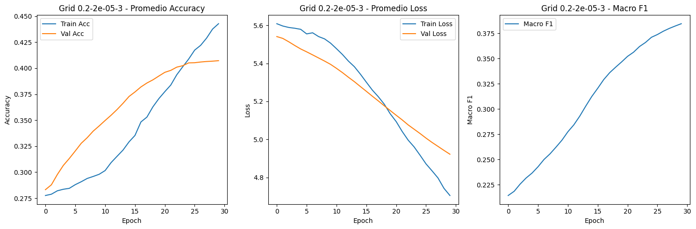
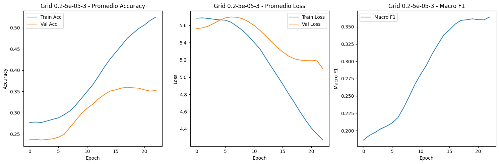
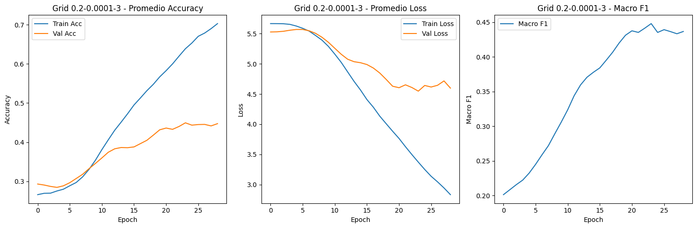
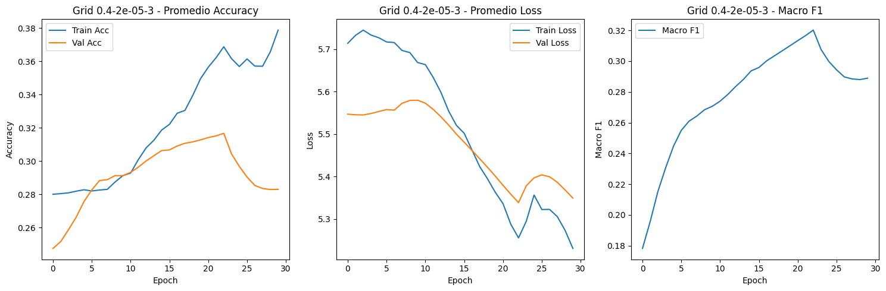
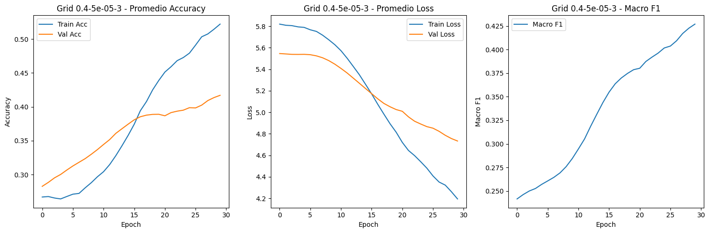
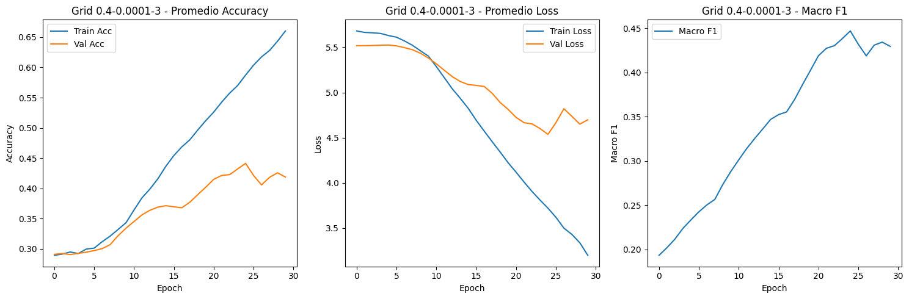
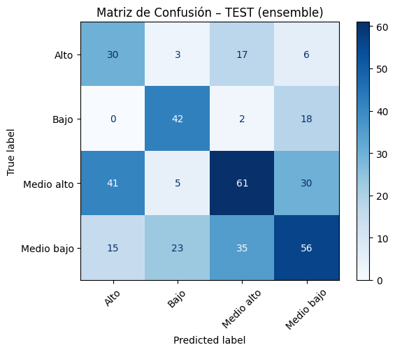
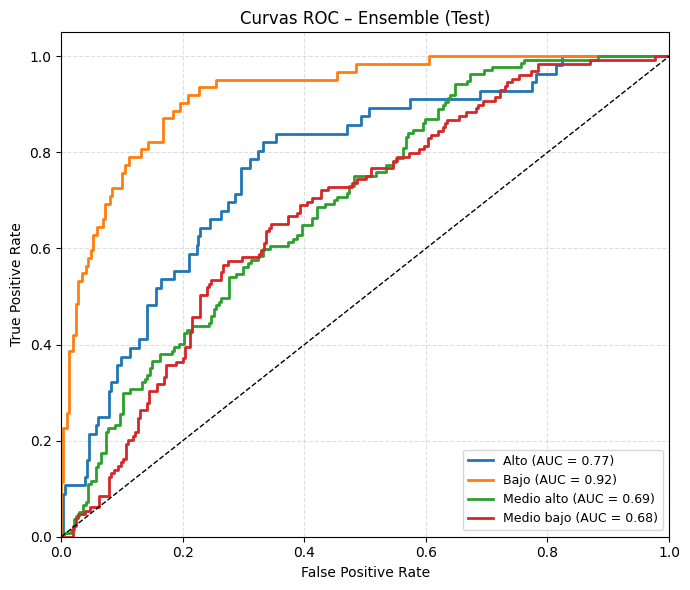

Arquitectura BiLSTM-CNN-ATT#
# Librerías y Configuración Inicial
import pandas as pd
import torch
from sklearn.preprocessing import LabelEncoder, StandardScaler
from sklearn.model_selection import train_test_split, KFold
from transformers import AutoTokenizer, AutoModel
from torch.utils.data import DataLoader, Dataset
from sklearn.metrics import accuracy_score, classification_report, confusion_matrix, ConfusionMatrixDisplay, \
precision_score, recall_score, f1_score, roc_auc_score, log_loss
import matplotlib.pyplot as plt
import torch.nn.functional as F
import torch.nn as nn
import gc
import stanza
import os
import numpy as np
import math
from collections import Counter
from torch.optim import AdamW
from sklearn.feature_extraction.text import TfidfVectorizer
from imblearn.over_sampling import RandomOverSampler
import warnings
warnings.filterwarnings('ignore')
# Stanza y BERT
stanza.download("es", verbose=False)
nlp_stanza = stanza.Pipeline("es", processors="tokenize,pos,lemma")
tokenizer = AutoTokenizer.from_pretrained("dccuchile/bert-base-spanish-wwm-cased")
model_bert = AutoModel.from_pretrained("dccuchile/bert-base-spanish-wwm-cased")
device = torch.device('cuda') if torch.cuda.is_available() else torch.device('cpu')
model_bert.to(device)
print(f"Usando dispositivo: {device}")
c:\Users\Sistemas\anaconda3\envs\entorno_actualizado\Lib\site-packages\tqdm\auto.py:21: TqdmWarning: IProgress not found. Please update jupyter and ipywidgets. See https://ipywidgets.readthedocs.io/en/stable/user_install.html
from .autonotebook import tqdm as notebook_tqdm
Some weights of BertModel were not initialized from the model checkpoint at dccuchile/bert-base-spanish-wwm-cased and are newly initialized: ['bert.pooler.dense.bias', 'bert.pooler.dense.weight']
You should probably TRAIN this model on a down-stream task to be able to use it for predictions and inference.
Usando dispositivo: cuda
# Datos
DATA_PATH = r"C:\Users\Sistemas\Desktop\PFINAL\nuevo_df.csv"
df = pd.read_csv(DATA_PATH, encoding="utf-8-sig")
#df = df.head(300)
if "clean_text" not in df.columns:
txt_col = next(c for c in df.select_dtypes("object").columns if c != "Nivel_f")
pref = os.path.commonprefix(df[txt_col].tolist())
df["clean_text"] = df[txt_col].str[len(pref):].str.strip()
label_encoder = LabelEncoder()
df["etiqueta_codificada"] = label_encoder.fit_transform(df["Nivel_f"])
print(df[["Nivel_f", "clean_text"]].head())
print(df["Nivel_f"].value_counts())
X_text = df["clean_text"]
y = df["etiqueta_codificada"]
X_text_train, X_text_test, y_train, y_test = train_test_split(
X_text, y, test_size=0.2, random_state=42, stratify=y
)
Nivel_f clean_text
0 Medio bajo otro aspecto que podemos tener en cuenta es la...
1 Medio alto En segundo lugar, el aprendizaje de lectura y ...
2 Medio bajo en segundo lugar, fomentando estas practicas d...
3 Medio bajo En segundo lugar, la lectura y escritura es fu...
4 Medio bajo La lectura y la escritura son importantes para...
Nivel_f
Medio alto 687
Medio bajo 644
Bajo 310
Alto 279
Name: count, dtype: int64
from itertools import product
dropout_grid = [0.2, 0.4]
learning_rate_grid = [2e-5, 5e-5, 1e-4]
n_splits_grid = [3]
EPOCHS = 30
# Funciones de Features Lingüísticas y Distancias
def extraer_caracteristicas_avanzadas(texto, tokenizer, model, device):
doc = nlp_stanza(texto)
oraciones = [s.text for s in doc.sentences]
palabras = [w.text.lower() for s in doc.sentences for w in s.words if w.text.isalpha()]
tipos = set(palabras)
tokens = len(palabras)
tipos_count = len(tipos)
hapax = sum(1 for v in Counter(palabras).values() if v == 1)
ttr = tipos_count / tokens if tokens else 0
rttr = tipos_count / np.sqrt(2 * tokens) if tokens else 0
cttr = tipos_count / np.sqrt(2 * tokens) if tokens else 0
maas = (math.log(tokens) - math.log(tipos_count)) / (math.log(tokens)**2) if tokens > 1 and tipos_count > 1 else 0
herdan = math.log(tipos_count) / math.log(tokens) if tokens > 1 and tipos_count > 1 else 0
honore = 100 * math.log(tokens) / (1 - (hapax / tipos_count)) if tipos_count > 1 and (1 - (hapax / tipos_count)) != 0 else 0
def mattr(palabras, window_size=50):
if len(palabras) < window_size:
return ttr
return np.mean([len(set(palabras[i:i+window_size]))/window_size
for i in range(len(palabras)-window_size+1)])
def mtld(palabras, threshold=0.72):
factors, factor_length, ttr_temp = 0, 0, []
for i, word in enumerate(palabras, 1):
ttr_temp.append(word)
if len(set(ttr_temp)) / len(ttr_temp) <= threshold:
factors += 1
factor_length += len(ttr_temp)
ttr_temp = []
if ttr_temp:
factors += 1
factor_length += len(ttr_temp)
return factor_length / factors if factors else 0
mattr_val = mattr(palabras)
mtld_val = mtld(palabras)
parrafos = [p for p in texto.split('\n') if p.strip()]
n_parrafos = len(parrafos)
n_oraciones = len(oraciones)
oraciones_lens = [len([w for w in s.split() if w.isalpha()]) for s in oraciones]
parrafos_lens = [len([w for w in p.split() if w.isalpha()]) for p in parrafos]
return {
"ttr": ttr, "rttr": rttr, "cttr": cttr, "mattr": mattr_val, "mtld": mtld_val,
"honore": honore, "maas": maas, "herdan": herdan,
"prom_oraciones_por_parrafo": n_oraciones / n_parrafos if n_parrafos else 0,
"prom_longitud_oracion": np.mean(oraciones_lens) if oraciones_lens else 0,
"desv_longitud_oracion": np.std(oraciones_lens) if oraciones_lens else 0,
"prom_longitud_parrafo": np.mean(parrafos_lens) if parrafos_lens else 0,
"desv_longitud_parrafo": np.std(parrafos_lens) if parrafos_lens else 0,
}
def tokenizar_datos(textos, tokenizer, max_len=512):
return tokenizer(
textos,
truncation=True,
padding='max_length',
max_length=max_len,
return_tensors='pt'
)
def obtener_embedding_promedio(texto, tokenizer, model, device):
inputs = tokenizer(texto, return_tensors="pt", truncation=True, padding=True).to(device)
with torch.no_grad():
outputs = model(**inputs)
embedding_texto = outputs.last_hidden_state.mean(dim=1).cpu().detach().numpy().squeeze()
return embedding_texto
def calcular_centroides_por_clase(X_text_train, y_train, tokenizer, model, device):
centroids = {}
y_arr = np.array(y_train)
for class_idx in np.unique(y_arr):
idxs = np.where(y_arr == class_idx)[0]
textos = X_text_train.iloc[idxs].tolist()
embeddings = [obtener_embedding_promedio(t, tokenizer, model, device) for t in textos]
centroids[class_idx] = np.mean(embeddings, axis=0)
return centroids
def agregar_distancia_a_centroides(texto, tokenizer, model, device, class_centroids):
embedding = obtener_embedding_promedio(texto, tokenizer, model, device)
return {f"dist_centroide_{cls}": np.linalg.norm(embedding - centroid) for cls, centroid in class_centroids.items()}
# 3. Modelos y Dataset
class TextDataset(Dataset):
def __init__(self, encodings, features, labels):
self.encodings = encodings
self.features = features.reset_index(drop=True)
self.labels = labels.reset_index(drop=True)
def __getitem__(self, idx):
item = {key: val[idx] for key, val in self.encodings.items()}
item['features'] = torch.tensor(self.features.iloc[idx].values, dtype=torch.float)
item['labels'] = torch.tensor(self.labels.iloc[idx], dtype=torch.long)
return item
def __len__(self):
return len(self.labels)
class Attention(nn.Module):
def __init__(self, hidden_dim):
super().__init__()
self.attn = nn.Linear(hidden_dim, 1)
def forward(self, lstm_output):
# lstm_output: (batch_size, seq_len, hidden_dim)
attn_weights = F.softmax(self.attn(lstm_output), dim=1) # (batch_size, seq_len, 1)
context = torch.sum(attn_weights * lstm_output, dim=1) # (batch_size, hidden_dim)
return context
class BiLSTM_CNN_Text_Classifier(nn.Module):
def __init__(self, bert_model, lstm_hidden_dim, n_filters, filter_sizes, output_dim, dropout, n_linguistic_features):
super().__init__()
self.bert = bert_model
embedding_dim = self.bert.config.hidden_size
self.lstm = nn.LSTM(embedding_dim, lstm_hidden_dim, num_layers=2, bidirectional=True, batch_first=True)
self.attn = Attention(2 * lstm_hidden_dim) # BiLSTM output dim
self.convs = nn.ModuleList([
nn.Conv2d(in_channels=1, out_channels=n_filters, kernel_size=(fs, 2 * lstm_hidden_dim))
for fs in filter_sizes
])
self.fc1 = nn.Linear(len(filter_sizes) * n_filters + 2 * lstm_hidden_dim + n_linguistic_features, 128)
self.bn1 = nn.BatchNorm1d(128)
self.fc2 = nn.Linear(128, output_dim)
self.dropout = nn.Dropout(dropout)
def forward(self, input_ids, attention_mask, features):
bert_outputs = self.bert(input_ids=input_ids, attention_mask=attention_mask)
embeddings = bert_outputs.last_hidden_state # (batch, seq_len, bert_dim)
lstm_out, _ = self.lstm(embeddings) # (batch, seq_len, 2*lstm_h)
attn_vec = self.attn(lstm_out) # (batch, 2*lstm_h)
lstm_out_unsq = lstm_out.unsqueeze(1) # (batch, 1, seq_len, 2*lstm_h)
conved = [torch.relu(conv(lstm_out_unsq)).squeeze(3) for conv in self.convs]
pooled = [torch.max(conv, dim=2)[0] for conv in conved]
cat_cnn = self.dropout(torch.cat(pooled, dim=1))
# Fusionamos [CNN features | Attention | Ling features]
cat = torch.cat((cat_cnn, attn_vec, features), dim=1)
x = self.dropout(F.relu(self.bn1(self.fc1(cat))))
return self.fc2(x)
# Pipeline de entrenamiento y busqueda
resultados_grid, ensemble_preds_test, ensemble_probs_test, histories_allgrids = [], [], [], []
BATCH_GPU, ACCUM_STEPS, MAX_LEN, GRAD_MAX_NORM = 128, 4, 512, 1.0
def ema_smooth(arr, beta=0.7):
if len(arr) == 0:
return arr
smoothed = [arr[0]]
for x in arr[1:]:
smoothed.append(beta * smoothed[-1] + (1 - beta) * x)
return smoothed
for dropout, lr, n_splits in product(dropout_grid, learning_rate_grid, n_splits_grid):
print(f"\n>>> Entrenando con dropout={dropout}, lr={lr}, folds={n_splits}")
kf = KFold(n_splits=n_splits, shuffle=True, random_state=42)
histories_folds_grid, metrics_val_folds, fold_probs_test = [], [], []
class_centroids = calcular_centroides_por_clase(X_text_train, y_train, tokenizer, model_bert, device)
for fold, (train_index, val_index) in enumerate(kf.split(X_text_train)):
print(f"\n--- Procesando Fold {fold+1}/{n_splits} ---")
X_fold_train_text = X_text_train.iloc[train_index].tolist()
y_fold_train = pd.Series(y_train).iloc[train_index].reset_index(drop=True)
class_names = list(label_encoder.classes_)
minority_indices = [i for i, name in enumerate(class_names) if name in ['Alto', 'Bajo']]
present_indices = [idx for idx in minority_indices if idx in set(y_fold_train)]
if len(present_indices) > 0:
y_train_counts = Counter(y_fold_train)
max_count = max([y_train_counts[idx] for idx in y_train_counts])
sampling_strategy = {idx: max_count for idx in present_indices}
oversampler = RandomOverSampler(sampling_strategy=sampling_strategy, random_state=42)
X_fold_train_text_overs, y_fold_train_overs = oversampler.fit_resample(
pd.DataFrame({'text': X_fold_train_text}), y_fold_train
)
X_fold_train_text = X_fold_train_text_overs['text'].tolist()
y_fold_train = y_fold_train_overs.reset_index(drop=True)
features_train_dicts = [
{**extraer_caracteristicas_avanzadas(t, tokenizer, model_bert, device),
**agregar_distancia_a_centroides(t, tokenizer, model_bert, device, class_centroids)}
for t in X_fold_train_text
]
X_fold_train_feats = pd.DataFrame(features_train_dicts)
X_fold_val_text = X_text_train.iloc[val_index].tolist()
y_fold_val = pd.Series(y_train).iloc[val_index].reset_index(drop=True)
features_val_dicts = [
{**extraer_caracteristicas_avanzadas(t, tokenizer, model_bert, device),
**agregar_distancia_a_centroides(t, tokenizer, model_bert, device, class_centroids)}
for t in X_fold_val_text
]
X_fold_val_feats = pd.DataFrame(features_val_dicts)
tfidf_fold = TfidfVectorizer(max_features=5000)
tfidf_fold.fit(X_fold_train_text)
X_fold_train_feats["tfidf_avg"] = tfidf_fold.transform(X_fold_train_text).mean(axis=1).A1
X_fold_val_feats["tfidf_avg"] = tfidf_fold.transform(X_fold_val_text).mean(axis=1).A1
corr_matrix = X_fold_train_feats.corr().abs()
upper = corr_matrix.where(np.triu(np.ones(corr_matrix.shape), k=1).astype(bool))
to_drop = [c for c in upper.columns if any(upper[c] > 0.95)]
X_fold_train_feats.drop(columns=to_drop, inplace=True)
X_fold_val_feats.drop(columns=to_drop, inplace=True)
feature_columns = X_fold_train_feats.columns.tolist()
scaler_fold = StandardScaler()
scaler_fold.fit(X_fold_train_feats)
X_fold_train_feats = pd.DataFrame(scaler_fold.transform(X_fold_train_feats), columns=feature_columns)
X_fold_val_feats = pd.DataFrame(scaler_fold.transform(X_fold_val_feats), columns=feature_columns)
n_linguistic_features = len(feature_columns)
train_encodings = tokenizar_datos(X_fold_train_text, tokenizer, MAX_LEN)
val_encodings = tokenizar_datos(X_fold_val_text, tokenizer, MAX_LEN)
train_dataset = TextDataset(train_encodings, X_fold_train_feats, y_fold_train)
val_dataset = TextDataset(val_encodings, X_fold_val_feats, y_fold_val)
train_loader = DataLoader(train_dataset, batch_size=BATCH_GPU, shuffle=True)
val_loader = DataLoader(val_dataset, batch_size=BATCH_GPU)
model = BiLSTM_CNN_Text_Classifier(
bert_model=model_bert, lstm_hidden_dim=256, n_filters=50, filter_sizes=[2, 3, 4],
output_dim=len(label_encoder.classes_), dropout=dropout, n_linguistic_features=n_linguistic_features
).to(device)
model.bert.gradient_checkpointing_enable()
for p in model.bert.parameters():
p.requires_grad = False
no_decay = ['bias', 'LayerNorm.weight']
bert_params = [p for n, p in model.named_parameters() if "bert" in n]
custom_params = [p for n, p in model.named_parameters() if "bert" not in n]
optimizer = AdamW(
[{"params": bert_params, "weight_decay": 0.01, "lr": lr / 10},
{"params": custom_params, "weight_decay": 0.01, "lr": lr}],
betas=(0.9, 0.98), eps=1e-8
)
scheduler = torch.optim.lr_scheduler.OneCycleLR(
optimizer, max_lr=lr, total_steps=EPOCHS * len(train_loader),
pct_start=0.1, anneal_strategy='cos', final_div_factor=20
)
class_counts = Counter(y_fold_train)
total_count = sum(class_counts.values())
weights = torch.tensor([total_count / class_counts[i] for i in range(len(class_counts))],
dtype=torch.float, device=device)
class FocalLoss(nn.Module):
def __init__(self, alpha=1, gamma=1.5, weight=None):
super().__init__()
self.alpha, self.gamma, self.weight = alpha, gamma, weight
def forward(self, inputs, targets):
ce = nn.CrossEntropyLoss(weight=self.weight, reduction='none')(inputs, targets)
pt = torch.exp(-ce)
return (self.alpha * (1 - pt) ** self.gamma * ce).mean()
loss_fn = FocalLoss(weight=weights)
scaler = torch.cuda.amp.GradScaler()
unfreeze_every = 3
best_val_f1, patience, wait = 0, 5, 0
fold_history = {'train_acc': [], 'val_acc': [], 'train_loss': [], 'val_loss': [], 'val_f1': []}
def progressive_unfreeze(epoch):
if epoch % unfreeze_every == 0:
layer_idx = 11 - (epoch // unfreeze_every)
if layer_idx >= 0:
for p in model.bert.encoder.layer[layer_idx].parameters():
p.requires_grad = True
print(f"Descongelada capa BERT {layer_idx}")
def train_epoch():
model.train()
total_loss, total_correct, total_samples = 0, 0, 0
optimizer.zero_grad()
for step, batch in enumerate(train_loader):
inputs = {k: v.to(device) for k, v in batch.items() if k not in ['features', 'labels']}
features = batch['features'].to(device)
labels = batch['labels'].to(device)
with torch.cuda.amp.autocast(dtype=torch.float16):
outputs = model(input_ids=inputs['input_ids'],
attention_mask=inputs['attention_mask'],
features=features)
loss = loss_fn(outputs, labels) / ACCUM_STEPS
scaler.scale(loss).backward()
if (step + 1) % ACCUM_STEPS == 0:
scaler.unscale_(optimizer)
torch.nn.utils.clip_grad_norm_(model.parameters(), GRAD_MAX_NORM)
scaler.step(optimizer)
scaler.update()
optimizer.zero_grad()
scheduler.step()
total_loss += loss.item() * ACCUM_STEPS
preds = outputs.argmax(dim=1)
total_correct += (preds == labels).sum().item()
total_samples += labels.size(0)
return total_loss / len(train_loader), total_correct / total_samples
@torch.no_grad()
def eval_epoch(loader):
model.eval()
total_loss, total_correct, total_samples, true_labels, predictions = 0, 0, 0, [], []
for batch in loader:
inputs = {k: v.to(device) for k, v in batch.items() if k not in ['features', 'labels']}
features = batch['features'].to(device)
labels = batch['labels'].to(device)
with torch.cuda.amp.autocast(dtype=torch.float16):
outputs = model(input_ids=inputs['input_ids'],
attention_mask=inputs['attention_mask'],
features=features)
loss = loss_fn(outputs, labels)
total_loss += loss.item()
preds = outputs.argmax(dim=1)
total_correct += (preds == labels).sum().item()
total_samples += labels.size(0)
true_labels.extend(labels.cpu().numpy())
predictions.extend(preds.cpu().numpy())
acc = total_correct / total_samples
f1 = f1_score(true_labels, predictions, average='macro', zero_division=0)
return total_loss / len(loader), acc, f1, true_labels, predictions
for epoch in range(EPOCHS):
progressive_unfreeze(epoch)
train_loss, train_acc = train_epoch()
val_loss, val_acc, val_f1, y_true_val, y_pred_val = eval_epoch(val_loader)
fold_history['train_acc'].append(train_acc)
fold_history['val_acc'].append(val_acc)
fold_history['train_loss'].append(train_loss)
fold_history['val_loss'].append(val_loss)
fold_history['val_f1'].append(val_f1)
print(f"Grid {dropout}-{lr}-{n_splits} | Epoch {epoch+1:02d} |TrainAcc {train_acc:.3f} | ValAcc {val_acc:.3f} | MacroF1 {val_f1:.3f}")
if val_f1 > best_val_f1 + 1e-4:
torch.save(model.state_dict(), f"best_model_{dropout}_{lr}_{fold}.pt")
best_val_f1, wait = val_f1, 0
else:
wait += 1
if wait >= patience:
print(f"Early-Stopping en {patience} épocas sin mejora")
break
metrics_val_folds.append({
"accuracy": accuracy_score(y_true_val, y_pred_val),
"precision": precision_score(y_true_val, y_pred_val, average='macro', zero_division=0),
"recall": recall_score(y_true_val, y_pred_val, average='macro', zero_division=0),
"f1": f1_score(y_true_val, y_pred_val, average='macro', zero_division=0)
})
histories_folds_grid.append(fold_history)
features_test_dicts = [
{**extraer_caracteristicas_avanzadas(t, tokenizer, model_bert, device),
**agregar_distancia_a_centroides(t, tokenizer, model_bert, device, class_centroids)}
for t in X_text_test.tolist()
]
X_features_test_df = pd.DataFrame(features_test_dicts)
X_features_test_df["tfidf_avg"] = tfidf_fold.transform(X_text_test.tolist()).mean(axis=1).A1
for col in feature_columns:
if col not in X_features_test_df.columns:
X_features_test_df[col] = 0.0
X_features_test_df = X_features_test_df[feature_columns]
X_features_test_df = pd.DataFrame(scaler_fold.transform(X_features_test_df), columns=feature_columns)
test_encodings = tokenizar_datos(X_text_test.tolist(), tokenizer, MAX_LEN)
test_dataset = TextDataset(test_encodings, X_features_test_df, pd.Series(y_test).reset_index(drop=True))
test_loader = DataLoader(test_dataset, batch_size=BATCH_GPU)
def get_probs(loader):
model.eval()
probs = []
with torch.no_grad():
for batch in loader:
inputs = {k: v.to(device) for k, v in batch.items() if k not in ['features', 'labels']}
features = batch['features'].to(device)
outputs = model(input_ids=inputs['input_ids'],
attention_mask=inputs['attention_mask'],
features=features)
out_probs = torch.softmax(outputs, dim=1).cpu().numpy()
probs.append(out_probs if out_probs.ndim == 2 else out_probs.reshape(-1, 1))
return np.concatenate(probs)
fold_probs_test.append(get_probs(test_loader))
# ========= Helper para promediar curvas de longitudes variables =========
def mean_curve(histories, key):
"""
Recibe una lista de dicts (histories_folds_grid) y la clave a promediar
Devuelve un np.ndarray con la media por época, ignorando NaNs
"""
df = pd.DataFrame([h[key] for h in histories]) # filas = folds, cols = epochs
return df.mean(skipna=True).to_numpy() # mean por columna
# ----------------- Sustituye este bloque -----------------
avg_train_acc = mean_curve(histories_folds_grid, 'train_acc')
avg_val_acc = mean_curve(histories_folds_grid, 'val_acc')
avg_train_loss = mean_curve(histories_folds_grid, 'train_loss')
avg_val_loss = mean_curve(histories_folds_grid, 'val_loss')
avg_val_f1 = mean_curve(histories_folds_grid, 'val_f1')
# ---------------------------------------------------------
avg_train_acc, avg_val_acc = ema_smooth(avg_train_acc), ema_smooth(avg_val_acc)
avg_train_loss, avg_val_loss = ema_smooth(avg_train_loss), ema_smooth(avg_val_loss)
avg_val_f1 = ema_smooth(avg_val_f1)
plt.figure(figsize=(15, 5))
plt.subplot(1, 3, 1)
plt.plot(avg_train_acc, label='Train Acc')
plt.plot(avg_val_acc, label='Val Acc')
plt.xlabel('Epoch')
plt.ylabel('Accuracy')
plt.title(f'Grid {dropout}-{lr}-{n_splits} - Promedio Accuracy')
plt.legend()
plt.subplot(1, 3, 2)
plt.plot(avg_train_loss, label='Train Loss')
plt.plot(avg_val_loss, label='Val Loss')
plt.xlabel('Epoch')
plt.ylabel('Loss')
plt.title(f'Grid {dropout}-{lr}-{n_splits} - Promedio Loss')
plt.legend()
plt.subplot(1, 3, 3)
plt.plot(avg_val_f1, label='Macro F1')
plt.xlabel('Epoch')
plt.ylabel('Macro F1')
plt.title(f'Grid {dropout}-{lr}-{n_splits} - Macro F1')
plt.legend()
plt.tight_layout()
plt.show()
df_metrics_val = pd.DataFrame(metrics_val_folds)
fold_probs_test = np.array(fold_probs_test)
if fold_probs_test.ndim == 2:
fold_probs_test = fold_probs_test[None, :, :] if fold_probs_test.shape[1] > 1 else fold_probs_test[None, :, None]
elif fold_probs_test.ndim == 1:
fold_probs_test = fold_probs_test[None, :, None]
ensemble_probs = np.mean(fold_probs_test, axis=0)
ensemble_probs = ensemble_probs if ensemble_probs.ndim == 2 else ensemble_probs.reshape(-1, 1)
ensemble_pred = np.argmax(ensemble_probs, axis=1)
acc_ensemble = accuracy_score(y_test, ensemble_pred)
try:
auc_ensemble = roc_auc_score(y_test, ensemble_probs, multi_class="ovr", average='macro')
except:
auc_ensemble = np.nan
macrof1_ensemble = f1_score(y_test, ensemble_pred, average='macro', zero_division=0)
resultados_grid.append({
"dropout": dropout,
"learning_rate": lr,
"n_splits": n_splits,
"ensemble_accuracy_test": acc_ensemble,
"ensemble_auc_test": auc_ensemble,
"ensemble_macro_f1": macrof1_ensemble,
"val_acc_mean": df_metrics_val["accuracy"].mean(),
"val_acc_std": df_metrics_val["accuracy"].std()
})
ensemble_preds_test.append(ensemble_pred)
ensemble_probs_test.append(ensemble_probs)
histories_allgrids.append(histories_folds_grid)
>>> Entrenando con dropout=0.2, lr=2e-05, folds=3
--- Procesando Fold 1/3 ---
Descongelada capa BERT 11
Grid 0.2-2e-05-3 | Epoch 01 |TrainAcc 0.278 | ValAcc 0.205 | MacroF1 0.151
Grid 0.2-2e-05-3 | Epoch 02 |TrainAcc 0.280 | ValAcc 0.248 | MacroF1 0.189
Grid 0.2-2e-05-3 | Epoch 03 |TrainAcc 0.291 | ValAcc 0.289 | MacroF1 0.211
Descongelada capa BERT 10
Grid 0.2-2e-05-3 | Epoch 04 |TrainAcc 0.279 | ValAcc 0.307 | MacroF1 0.232
Grid 0.2-2e-05-3 | Epoch 05 |TrainAcc 0.277 | ValAcc 0.305 | MacroF1 0.235
Grid 0.2-2e-05-3 | Epoch 06 |TrainAcc 0.282 | ValAcc 0.316 | MacroF1 0.252
Descongelada capa BERT 9
Grid 0.2-2e-05-3 | Epoch 07 |TrainAcc 0.298 | ValAcc 0.324 | MacroF1 0.260
Grid 0.2-2e-05-3 | Epoch 08 |TrainAcc 0.298 | ValAcc 0.342 | MacroF1 0.274
Grid 0.2-2e-05-3 | Epoch 09 |TrainAcc 0.285 | ValAcc 0.352 | MacroF1 0.278
Descongelada capa BERT 8
Grid 0.2-2e-05-3 | Epoch 10 |TrainAcc 0.297 | ValAcc 0.355 | MacroF1 0.293
Grid 0.2-2e-05-3 | Epoch 11 |TrainAcc 0.298 | ValAcc 0.361 | MacroF1 0.300
Grid 0.2-2e-05-3 | Epoch 12 |TrainAcc 0.326 | ValAcc 0.361 | MacroF1 0.295
Descongelada capa BERT 7
Grid 0.2-2e-05-3 | Epoch 13 |TrainAcc 0.322 | ValAcc 0.379 | MacroF1 0.320
Grid 0.2-2e-05-3 | Epoch 14 |TrainAcc 0.335 | ValAcc 0.387 | MacroF1 0.330
Grid 0.2-2e-05-3 | Epoch 15 |TrainAcc 0.354 | ValAcc 0.398 | MacroF1 0.341
Descongelada capa BERT 6
Grid 0.2-2e-05-3 | Epoch 16 |TrainAcc 0.338 | ValAcc 0.395 | MacroF1 0.337
Grid 0.2-2e-05-3 | Epoch 17 |TrainAcc 0.380 | ValAcc 0.406 | MacroF1 0.351
Grid 0.2-2e-05-3 | Epoch 18 |TrainAcc 0.348 | ValAcc 0.410 | MacroF1 0.356
Descongelada capa BERT 5
Grid 0.2-2e-05-3 | Epoch 19 |TrainAcc 0.385 | ValAcc 0.414 | MacroF1 0.361
Grid 0.2-2e-05-3 | Epoch 20 |TrainAcc 0.383 | ValAcc 0.412 | MacroF1 0.359
Grid 0.2-2e-05-3 | Epoch 21 |TrainAcc 0.383 | ValAcc 0.416 | MacroF1 0.366
Descongelada capa BERT 4
Grid 0.2-2e-05-3 | Epoch 22 |TrainAcc 0.392 | ValAcc 0.410 | MacroF1 0.362
Grid 0.2-2e-05-3 | Epoch 23 |TrainAcc 0.410 | ValAcc 0.410 | MacroF1 0.365
Grid 0.2-2e-05-3 | Epoch 24 |TrainAcc 0.408 | ValAcc 0.416 | MacroF1 0.371
Descongelada capa BERT 3
Grid 0.2-2e-05-3 | Epoch 25 |TrainAcc 0.414 | ValAcc 0.424 | MacroF1 0.377
Grid 0.2-2e-05-3 | Epoch 26 |TrainAcc 0.431 | ValAcc 0.426 | MacroF1 0.382
Grid 0.2-2e-05-3 | Epoch 27 |TrainAcc 0.406 | ValAcc 0.434 | MacroF1 0.392
Descongelada capa BERT 2
Grid 0.2-2e-05-3 | Epoch 28 |TrainAcc 0.445 | ValAcc 0.430 | MacroF1 0.391
Grid 0.2-2e-05-3 | Epoch 29 |TrainAcc 0.444 | ValAcc 0.428 | MacroF1 0.388
Grid 0.2-2e-05-3 | Epoch 30 |TrainAcc 0.434 | ValAcc 0.430 | MacroF1 0.392
--- Procesando Fold 2/3 ---
Descongelada capa BERT 11
Grid 0.2-2e-05-3 | Epoch 01 |TrainAcc 0.303 | ValAcc 0.311 | MacroF1 0.239
Grid 0.2-2e-05-3 | Epoch 02 |TrainAcc 0.311 | ValAcc 0.312 | MacroF1 0.252
Grid 0.2-2e-05-3 | Epoch 03 |TrainAcc 0.310 | ValAcc 0.312 | MacroF1 0.254
Descongelada capa BERT 10
Grid 0.2-2e-05-3 | Epoch 04 |TrainAcc 0.317 | ValAcc 0.312 | MacroF1 0.247
Grid 0.2-2e-05-3 | Epoch 05 |TrainAcc 0.313 | ValAcc 0.318 | MacroF1 0.253
Grid 0.2-2e-05-3 | Epoch 06 |TrainAcc 0.334 | ValAcc 0.332 | MacroF1 0.264
Descongelada capa BERT 9
Grid 0.2-2e-05-3 | Epoch 07 |TrainAcc 0.314 | ValAcc 0.336 | MacroF1 0.267
Grid 0.2-2e-05-3 | Epoch 08 |TrainAcc 0.326 | ValAcc 0.324 | MacroF1 0.260
Grid 0.2-2e-05-3 | Epoch 09 |TrainAcc 0.331 | ValAcc 0.336 | MacroF1 0.273
Descongelada capa BERT 8
Grid 0.2-2e-05-3 | Epoch 10 |TrainAcc 0.317 | ValAcc 0.332 | MacroF1 0.269
Grid 0.2-2e-05-3 | Epoch 11 |TrainAcc 0.345 | ValAcc 0.344 | MacroF1 0.281
Grid 0.2-2e-05-3 | Epoch 12 |TrainAcc 0.336 | ValAcc 0.352 | MacroF1 0.287
Descongelada capa BERT 7
Grid 0.2-2e-05-3 | Epoch 13 |TrainAcc 0.347 | ValAcc 0.350 | MacroF1 0.290
Grid 0.2-2e-05-3 | Epoch 14 |TrainAcc 0.352 | ValAcc 0.354 | MacroF1 0.293
Grid 0.2-2e-05-3 | Epoch 15 |TrainAcc 0.357 | ValAcc 0.363 | MacroF1 0.300
Descongelada capa BERT 6
Grid 0.2-2e-05-3 | Epoch 16 |TrainAcc 0.376 | ValAcc 0.365 | MacroF1 0.313
Grid 0.2-2e-05-3 | Epoch 17 |TrainAcc 0.389 | ValAcc 0.365 | MacroF1 0.316
Grid 0.2-2e-05-3 | Epoch 18 |TrainAcc 0.382 | ValAcc 0.363 | MacroF1 0.314
Descongelada capa BERT 5
Grid 0.2-2e-05-3 | Epoch 19 |TrainAcc 0.400 | ValAcc 0.363 | MacroF1 0.315
Grid 0.2-2e-05-3 | Epoch 20 |TrainAcc 0.396 | ValAcc 0.381 | MacroF1 0.329
Grid 0.2-2e-05-3 | Epoch 21 |TrainAcc 0.408 | ValAcc 0.383 | MacroF1 0.333
Descongelada capa BERT 4
Grid 0.2-2e-05-3 | Epoch 22 |TrainAcc 0.410 | ValAcc 0.377 | MacroF1 0.330
Grid 0.2-2e-05-3 | Epoch 23 |TrainAcc 0.424 | ValAcc 0.383 | MacroF1 0.339
Grid 0.2-2e-05-3 | Epoch 24 |TrainAcc 0.422 | ValAcc 0.383 | MacroF1 0.341
Descongelada capa BERT 3
Grid 0.2-2e-05-3 | Epoch 25 |TrainAcc 0.426 | ValAcc 0.387 | MacroF1 0.347
Grid 0.2-2e-05-3 | Epoch 26 |TrainAcc 0.432 | ValAcc 0.377 | MacroF1 0.340
Grid 0.2-2e-05-3 | Epoch 27 |TrainAcc 0.440 | ValAcc 0.377 | MacroF1 0.344
Descongelada capa BERT 2
Grid 0.2-2e-05-3 | Epoch 28 |TrainAcc 0.441 | ValAcc 0.387 | MacroF1 0.357
Grid 0.2-2e-05-3 | Epoch 29 |TrainAcc 0.453 | ValAcc 0.393 | MacroF1 0.368
Grid 0.2-2e-05-3 | Epoch 30 |TrainAcc 0.452 | ValAcc 0.395 | MacroF1 0.374
--- Procesando Fold 3/3 ---
Descongelada capa BERT 11
Grid 0.2-2e-05-3 | Epoch 01 |TrainAcc 0.252 | ValAcc 0.334 | MacroF1 0.253
Grid 0.2-2e-05-3 | Epoch 02 |TrainAcc 0.254 | ValAcc 0.336 | MacroF1 0.243
Grid 0.2-2e-05-3 | Epoch 03 |TrainAcc 0.269 | ValAcc 0.361 | MacroF1 0.263
Descongelada capa BERT 10
Grid 0.2-2e-05-3 | Epoch 04 |TrainAcc 0.266 | ValAcc 0.361 | MacroF1 0.258
Grid 0.2-2e-05-3 | Epoch 05 |TrainAcc 0.269 | ValAcc 0.363 | MacroF1 0.257
Grid 0.2-2e-05-3 | Epoch 06 |TrainAcc 0.273 | ValAcc 0.363 | MacroF1 0.256
Descongelada capa BERT 9
Grid 0.2-2e-05-3 | Epoch 07 |TrainAcc 0.279 | ValAcc 0.375 | MacroF1 0.274
Grid 0.2-2e-05-3 | Epoch 08 |TrainAcc 0.281 | ValAcc 0.371 | MacroF1 0.272
Grid 0.2-2e-05-3 | Epoch 09 |TrainAcc 0.286 | ValAcc 0.375 | MacroF1 0.282
Descongelada capa BERT 8
Grid 0.2-2e-05-3 | Epoch 10 |TrainAcc 0.295 | ValAcc 0.381 | MacroF1 0.294
Grid 0.2-2e-05-3 | Epoch 11 |TrainAcc 0.286 | ValAcc 0.381 | MacroF1 0.311
Grid 0.2-2e-05-3 | Epoch 12 |TrainAcc 0.319 | ValAcc 0.387 | MacroF1 0.319
Descongelada capa BERT 7
Grid 0.2-2e-05-3 | Epoch 13 |TrainAcc 0.319 | ValAcc 0.391 | MacroF1 0.330
Grid 0.2-2e-05-3 | Epoch 14 |TrainAcc 0.319 | ValAcc 0.400 | MacroF1 0.356
Grid 0.2-2e-05-3 | Epoch 15 |TrainAcc 0.331 | ValAcc 0.402 | MacroF1 0.362
Descongelada capa BERT 6
Grid 0.2-2e-05-3 | Epoch 16 |TrainAcc 0.335 | ValAcc 0.402 | MacroF1 0.369
Grid 0.2-2e-05-3 | Epoch 17 |TrainAcc 0.367 | ValAcc 0.408 | MacroF1 0.381
Grid 0.2-2e-05-3 | Epoch 18 |TrainAcc 0.362 | ValAcc 0.410 | MacroF1 0.386
Descongelada capa BERT 5
Grid 0.2-2e-05-3 | Epoch 19 |TrainAcc 0.372 | ValAcc 0.410 | MacroF1 0.386
Grid 0.2-2e-05-3 | Epoch 20 |TrainAcc 0.389 | ValAcc 0.410 | MacroF1 0.388
Grid 0.2-2e-05-3 | Epoch 21 |TrainAcc 0.389 | ValAcc 0.414 | MacroF1 0.396
Descongelada capa BERT 4
Grid 0.2-2e-05-3 | Epoch 22 |TrainAcc 0.394 | ValAcc 0.420 | MacroF1 0.406
Grid 0.2-2e-05-3 | Epoch 23 |TrainAcc 0.415 | ValAcc 0.432 | MacroF1 0.422
Grid 0.2-2e-05-3 | Epoch 24 |TrainAcc 0.428 | ValAcc 0.418 | MacroF1 0.414
Descongelada capa BERT 3
Grid 0.2-2e-05-3 | Epoch 25 |TrainAcc 0.439 | ValAcc 0.424 | MacroF1 0.424
Grid 0.2-2e-05-3 | Epoch 26 |TrainAcc 0.449 | ValAcc 0.414 | MacroF1 0.418
Grid 0.2-2e-05-3 | Epoch 27 |TrainAcc 0.452 | ValAcc 0.412 | MacroF1 0.418
Descongelada capa BERT 2
Grid 0.2-2e-05-3 | Epoch 28 |TrainAcc 0.449 | ValAcc 0.406 | MacroF1 0.411
Grid 0.2-2e-05-3 | Epoch 29 |TrainAcc 0.476 | ValAcc 0.402 | MacroF1 0.407
Grid 0.2-2e-05-3 | Epoch 30 |TrainAcc 0.478 | ValAcc 0.400 | MacroF1 0.403
Early-Stopping en 5 épocas sin mejora

>>> Entrenando con dropout=0.2, lr=5e-05, folds=3
--- Procesando Fold 1/3 ---
Descongelada capa BERT 11
Grid 0.2-5e-05-3 | Epoch 01 |TrainAcc 0.282 | ValAcc 0.279 | MacroF1 0.257
Grid 0.2-5e-05-3 | Epoch 02 |TrainAcc 0.289 | ValAcc 0.258 | MacroF1 0.265
Grid 0.2-5e-05-3 | Epoch 03 |TrainAcc 0.286 | ValAcc 0.236 | MacroF1 0.243
Descongelada capa BERT 10
Grid 0.2-5e-05-3 | Epoch 04 |TrainAcc 0.305 | ValAcc 0.230 | MacroF1 0.231
Grid 0.2-5e-05-3 | Epoch 05 |TrainAcc 0.291 | ValAcc 0.225 | MacroF1 0.226
Grid 0.2-5e-05-3 | Epoch 06 |TrainAcc 0.292 | ValAcc 0.225 | MacroF1 0.225
Descongelada capa BERT 9
Grid 0.2-5e-05-3 | Epoch 07 |TrainAcc 0.325 | ValAcc 0.229 | MacroF1 0.228
Early-Stopping en 5 épocas sin mejora
--- Procesando Fold 2/3 ---
Descongelada capa BERT 11
Grid 0.2-5e-05-3 | Epoch 01 |TrainAcc 0.292 | ValAcc 0.186 | MacroF1 0.124
Grid 0.2-5e-05-3 | Epoch 02 |TrainAcc 0.313 | ValAcc 0.221 | MacroF1 0.183
Grid 0.2-5e-05-3 | Epoch 03 |TrainAcc 0.281 | ValAcc 0.219 | MacroF1 0.193
Descongelada capa BERT 10
Grid 0.2-5e-05-3 | Epoch 04 |TrainAcc 0.307 | ValAcc 0.234 | MacroF1 0.216
Grid 0.2-5e-05-3 | Epoch 05 |TrainAcc 0.324 | ValAcc 0.244 | MacroF1 0.229
Grid 0.2-5e-05-3 | Epoch 06 |TrainAcc 0.326 | ValAcc 0.266 | MacroF1 0.247
Descongelada capa BERT 9
Grid 0.2-5e-05-3 | Epoch 07 |TrainAcc 0.331 | ValAcc 0.287 | MacroF1 0.268
Grid 0.2-5e-05-3 | Epoch 08 |TrainAcc 0.348 | ValAcc 0.309 | MacroF1 0.295
Grid 0.2-5e-05-3 | Epoch 09 |TrainAcc 0.366 | ValAcc 0.320 | MacroF1 0.316
Descongelada capa BERT 8
Grid 0.2-5e-05-3 | Epoch 10 |TrainAcc 0.380 | ValAcc 0.332 | MacroF1 0.327
Grid 0.2-5e-05-3 | Epoch 11 |TrainAcc 0.395 | ValAcc 0.330 | MacroF1 0.327
Grid 0.2-5e-05-3 | Epoch 12 |TrainAcc 0.413 | ValAcc 0.322 | MacroF1 0.322
Descongelada capa BERT 7
Grid 0.2-5e-05-3 | Epoch 13 |TrainAcc 0.433 | ValAcc 0.342 | MacroF1 0.346
Grid 0.2-5e-05-3 | Epoch 14 |TrainAcc 0.459 | ValAcc 0.354 | MacroF1 0.359
Grid 0.2-5e-05-3 | Epoch 15 |TrainAcc 0.456 | ValAcc 0.361 | MacroF1 0.373
Descongelada capa BERT 6
Grid 0.2-5e-05-3 | Epoch 16 |TrainAcc 0.483 | ValAcc 0.354 | MacroF1 0.368
Grid 0.2-5e-05-3 | Epoch 17 |TrainAcc 0.496 | ValAcc 0.363 | MacroF1 0.381
Grid 0.2-5e-05-3 | Epoch 18 |TrainAcc 0.496 | ValAcc 0.367 | MacroF1 0.385
Descongelada capa BERT 5
Grid 0.2-5e-05-3 | Epoch 19 |TrainAcc 0.511 | ValAcc 0.369 | MacroF1 0.384
Grid 0.2-5e-05-3 | Epoch 20 |TrainAcc 0.527 | ValAcc 0.369 | MacroF1 0.384
Grid 0.2-5e-05-3 | Epoch 21 |TrainAcc 0.511 | ValAcc 0.355 | MacroF1 0.374
Descongelada capa BERT 4
Grid 0.2-5e-05-3 | Epoch 22 |TrainAcc 0.535 | ValAcc 0.348 | MacroF1 0.366
Grid 0.2-5e-05-3 | Epoch 23 |TrainAcc 0.544 | ValAcc 0.355 | MacroF1 0.374
Early-Stopping en 5 épocas sin mejora
--- Procesando Fold 3/3 ---
Descongelada capa BERT 11
Grid 0.2-5e-05-3 | Epoch 01 |TrainAcc 0.257 | ValAcc 0.248 | MacroF1 0.178
Grid 0.2-5e-05-3 | Epoch 02 |TrainAcc 0.239 | ValAcc 0.230 | MacroF1 0.176
Grid 0.2-5e-05-3 | Epoch 03 |TrainAcc 0.257 | ValAcc 0.242 | MacroF1 0.186
Descongelada capa BERT 10
Grid 0.2-5e-05-3 | Epoch 04 |TrainAcc 0.254 | ValAcc 0.256 | MacroF1 0.197
Grid 0.2-5e-05-3 | Epoch 05 |TrainAcc 0.267 | ValAcc 0.258 | MacroF1 0.190
Grid 0.2-5e-05-3 | Epoch 06 |TrainAcc 0.271 | ValAcc 0.262 | MacroF1 0.194
Descongelada capa BERT 9
Grid 0.2-5e-05-3 | Epoch 07 |TrainAcc 0.282 | ValAcc 0.279 | MacroF1 0.213
Grid 0.2-5e-05-3 | Epoch 08 |TrainAcc 0.301 | ValAcc 0.299 | MacroF1 0.239
Grid 0.2-5e-05-3 | Epoch 09 |TrainAcc 0.333 | ValAcc 0.316 | MacroF1 0.262
Descongelada capa BERT 8
Grid 0.2-5e-05-3 | Epoch 10 |TrainAcc 0.361 | ValAcc 0.340 | MacroF1 0.289
Grid 0.2-5e-05-3 | Epoch 11 |TrainAcc 0.380 | ValAcc 0.350 | MacroF1 0.304
Grid 0.2-5e-05-3 | Epoch 12 |TrainAcc 0.395 | ValAcc 0.363 | MacroF1 0.328
Descongelada capa BERT 7
Grid 0.2-5e-05-3 | Epoch 13 |TrainAcc 0.432 | ValAcc 0.383 | MacroF1 0.352
Grid 0.2-5e-05-3 | Epoch 14 |TrainAcc 0.455 | ValAcc 0.377 | MacroF1 0.355
Grid 0.2-5e-05-3 | Epoch 15 |TrainAcc 0.485 | ValAcc 0.379 | MacroF1 0.365
Descongelada capa BERT 6
Grid 0.2-5e-05-3 | Epoch 16 |TrainAcc 0.475 | ValAcc 0.369 | MacroF1 0.358
Grid 0.2-5e-05-3 | Epoch 17 |TrainAcc 0.498 | ValAcc 0.371 | MacroF1 0.365
Grid 0.2-5e-05-3 | Epoch 18 |TrainAcc 0.530 | ValAcc 0.361 | MacroF1 0.358
Descongelada capa BERT 5
Grid 0.2-5e-05-3 | Epoch 19 |TrainAcc 0.517 | ValAcc 0.342 | MacroF1 0.340
Grid 0.2-5e-05-3 | Epoch 20 |TrainAcc 0.521 | ValAcc 0.342 | MacroF1 0.346
Grid 0.2-5e-05-3 | Epoch 21 |TrainAcc 0.541 | ValAcc 0.334 | MacroF1 0.341
Descongelada capa BERT 4
Grid 0.2-5e-05-3 | Epoch 22 |TrainAcc 0.548 | ValAcc 0.340 | MacroF1 0.353
Early-Stopping en 5 épocas sin mejora

>>> Entrenando con dropout=0.2, lr=0.0001, folds=3
--- Procesando Fold 1/3 ---
Descongelada capa BERT 11
Grid 0.2-0.0001-3 | Epoch 01 |TrainAcc 0.268 | ValAcc 0.373 | MacroF1 0.204
Grid 0.2-0.0001-3 | Epoch 02 |TrainAcc 0.275 | ValAcc 0.387 | MacroF1 0.250
Grid 0.2-0.0001-3 | Epoch 03 |TrainAcc 0.257 | ValAcc 0.367 | MacroF1 0.242
Descongelada capa BERT 10
Grid 0.2-0.0001-3 | Epoch 04 |TrainAcc 0.283 | ValAcc 0.363 | MacroF1 0.245
Grid 0.2-0.0001-3 | Epoch 05 |TrainAcc 0.289 | ValAcc 0.379 | MacroF1 0.259
Grid 0.2-0.0001-3 | Epoch 06 |TrainAcc 0.291 | ValAcc 0.391 | MacroF1 0.272
Descongelada capa BERT 9
Grid 0.2-0.0001-3 | Epoch 07 |TrainAcc 0.299 | ValAcc 0.398 | MacroF1 0.278
Grid 0.2-0.0001-3 | Epoch 08 |TrainAcc 0.316 | ValAcc 0.418 | MacroF1 0.301
Grid 0.2-0.0001-3 | Epoch 09 |TrainAcc 0.341 | ValAcc 0.449 | MacroF1 0.340
Descongelada capa BERT 8
Grid 0.2-0.0001-3 | Epoch 10 |TrainAcc 0.370 | ValAcc 0.469 | MacroF1 0.369
Grid 0.2-0.0001-3 | Epoch 11 |TrainAcc 0.415 | ValAcc 0.477 | MacroF1 0.387
Grid 0.2-0.0001-3 | Epoch 12 |TrainAcc 0.433 | ValAcc 0.496 | MacroF1 0.435
Descongelada capa BERT 7
Grid 0.2-0.0001-3 | Epoch 13 |TrainAcc 0.472 | ValAcc 0.479 | MacroF1 0.437
Grid 0.2-0.0001-3 | Epoch 14 |TrainAcc 0.485 | ValAcc 0.459 | MacroF1 0.434
Grid 0.2-0.0001-3 | Epoch 15 |TrainAcc 0.509 | ValAcc 0.432 | MacroF1 0.418
Descongelada capa BERT 6
Grid 0.2-0.0001-3 | Epoch 16 |TrainAcc 0.534 | ValAcc 0.434 | MacroF1 0.421
Grid 0.2-0.0001-3 | Epoch 17 |TrainAcc 0.533 | ValAcc 0.434 | MacroF1 0.421
Grid 0.2-0.0001-3 | Epoch 18 |TrainAcc 0.564 | ValAcc 0.461 | MacroF1 0.455
Descongelada capa BERT 5
Grid 0.2-0.0001-3 | Epoch 19 |TrainAcc 0.570 | ValAcc 0.479 | MacroF1 0.459
Grid 0.2-0.0001-3 | Epoch 20 |TrainAcc 0.600 | ValAcc 0.484 | MacroF1 0.458
Grid 0.2-0.0001-3 | Epoch 21 |TrainAcc 0.603 | ValAcc 0.480 | MacroF1 0.475
Descongelada capa BERT 4
Grid 0.2-0.0001-3 | Epoch 22 |TrainAcc 0.626 | ValAcc 0.473 | MacroF1 0.480
Grid 0.2-0.0001-3 | Epoch 23 |TrainAcc 0.653 | ValAcc 0.484 | MacroF1 0.473
Grid 0.2-0.0001-3 | Epoch 24 |TrainAcc 0.677 | ValAcc 0.494 | MacroF1 0.482
Descongelada capa BERT 3
Grid 0.2-0.0001-3 | Epoch 25 |TrainAcc 0.686 | ValAcc 0.494 | MacroF1 0.435
Grid 0.2-0.0001-3 | Epoch 26 |TrainAcc 0.709 | ValAcc 0.490 | MacroF1 0.478
Grid 0.2-0.0001-3 | Epoch 27 |TrainAcc 0.711 | ValAcc 0.422 | MacroF1 0.424
Descongelada capa BERT 2
Grid 0.2-0.0001-3 | Epoch 28 |TrainAcc 0.728 | ValAcc 0.486 | MacroF1 0.471
Grid 0.2-0.0001-3 | Epoch 29 |TrainAcc 0.733 | ValAcc 0.461 | MacroF1 0.444
Early-Stopping en 5 épocas sin mejora
--- Procesando Fold 2/3 ---
Descongelada capa BERT 11
Grid 0.2-0.0001-3 | Epoch 01 |TrainAcc 0.262 | ValAcc 0.277 | MacroF1 0.205
Grid 0.2-0.0001-3 | Epoch 02 |TrainAcc 0.289 | ValAcc 0.242 | MacroF1 0.216
Grid 0.2-0.0001-3 | Epoch 03 |TrainAcc 0.291 | ValAcc 0.244 | MacroF1 0.238
Descongelada capa BERT 10
Grid 0.2-0.0001-3 | Epoch 04 |TrainAcc 0.289 | ValAcc 0.238 | MacroF1 0.238
Grid 0.2-0.0001-3 | Epoch 05 |TrainAcc 0.304 | ValAcc 0.254 | MacroF1 0.251
Grid 0.2-0.0001-3 | Epoch 06 |TrainAcc 0.317 | ValAcc 0.262 | MacroF1 0.259
Descongelada capa BERT 9
Grid 0.2-0.0001-3 | Epoch 07 |TrainAcc 0.328 | ValAcc 0.264 | MacroF1 0.260
Grid 0.2-0.0001-3 | Epoch 08 |TrainAcc 0.351 | ValAcc 0.270 | MacroF1 0.262
Grid 0.2-0.0001-3 | Epoch 09 |TrainAcc 0.383 | ValAcc 0.279 | MacroF1 0.272
Descongelada capa BERT 8
Grid 0.2-0.0001-3 | Epoch 10 |TrainAcc 0.413 | ValAcc 0.301 | MacroF1 0.297
Grid 0.2-0.0001-3 | Epoch 11 |TrainAcc 0.442 | ValAcc 0.326 | MacroF1 0.323
Grid 0.2-0.0001-3 | Epoch 12 |TrainAcc 0.464 | ValAcc 0.355 | MacroF1 0.358
Descongelada capa BERT 7
Grid 0.2-0.0001-3 | Epoch 13 |TrainAcc 0.487 | ValAcc 0.375 | MacroF1 0.382
Grid 0.2-0.0001-3 | Epoch 14 |TrainAcc 0.496 | ValAcc 0.373 | MacroF1 0.391
Grid 0.2-0.0001-3 | Epoch 15 |TrainAcc 0.515 | ValAcc 0.375 | MacroF1 0.398
Descongelada capa BERT 6
Grid 0.2-0.0001-3 | Epoch 16 |TrainAcc 0.543 | ValAcc 0.354 | MacroF1 0.374
Grid 0.2-0.0001-3 | Epoch 17 |TrainAcc 0.550 | ValAcc 0.375 | MacroF1 0.394
Grid 0.2-0.0001-3 | Epoch 18 |TrainAcc 0.564 | ValAcc 0.385 | MacroF1 0.404
Descongelada capa BERT 5
Grid 0.2-0.0001-3 | Epoch 19 |TrainAcc 0.577 | ValAcc 0.414 | MacroF1 0.426
Grid 0.2-0.0001-3 | Epoch 20 |TrainAcc 0.597 | ValAcc 0.436 | MacroF1 0.443
Grid 0.2-0.0001-3 | Epoch 21 |TrainAcc 0.604 | ValAcc 0.379 | MacroF1 0.396
Descongelada capa BERT 4
Grid 0.2-0.0001-3 | Epoch 22 |TrainAcc 0.622 | ValAcc 0.350 | MacroF1 0.349
Grid 0.2-0.0001-3 | Epoch 23 |TrainAcc 0.645 | ValAcc 0.451 | MacroF1 0.450
Grid 0.2-0.0001-3 | Epoch 24 |TrainAcc 0.665 | ValAcc 0.434 | MacroF1 0.435
Descongelada capa BERT 3
Grid 0.2-0.0001-3 | Epoch 25 |TrainAcc 0.655 | ValAcc 0.338 | MacroF1 0.323
Grid 0.2-0.0001-3 | Epoch 26 |TrainAcc 0.693 | ValAcc 0.400 | MacroF1 0.412
Grid 0.2-0.0001-3 | Epoch 27 |TrainAcc 0.686 | ValAcc 0.471 | MacroF1 0.436
Descongelada capa BERT 2
Grid 0.2-0.0001-3 | Epoch 28 |TrainAcc 0.706 | ValAcc 0.379 | MacroF1 0.381
Early-Stopping en 5 épocas sin mejora
--- Procesando Fold 3/3 ---
Descongelada capa BERT 11
Grid 0.2-0.0001-3 | Epoch 01 |TrainAcc 0.268 | ValAcc 0.229 | MacroF1 0.195
Grid 0.2-0.0001-3 | Epoch 02 |TrainAcc 0.268 | ValAcc 0.225 | MacroF1 0.209
Grid 0.2-0.0001-3 | Epoch 03 |TrainAcc 0.264 | ValAcc 0.225 | MacroF1 0.216
Descongelada capa BERT 10
Grid 0.2-0.0001-3 | Epoch 04 |TrainAcc 0.293 | ValAcc 0.234 | MacroF1 0.229
Grid 0.2-0.0001-3 | Epoch 05 |TrainAcc 0.278 | ValAcc 0.260 | MacroF1 0.257
Grid 0.2-0.0001-3 | Epoch 06 |TrainAcc 0.320 | ValAcc 0.293 | MacroF1 0.291
Descongelada capa BERT 9
Grid 0.2-0.0001-3 | Epoch 07 |TrainAcc 0.322 | ValAcc 0.334 | MacroF1 0.334
Grid 0.2-0.0001-3 | Epoch 08 |TrainAcc 0.368 | ValAcc 0.342 | MacroF1 0.346
Grid 0.2-0.0001-3 | Epoch 09 |TrainAcc 0.402 | ValAcc 0.369 | MacroF1 0.376
Descongelada capa BERT 8
Grid 0.2-0.0001-3 | Epoch 10 |TrainAcc 0.444 | ValAcc 0.361 | MacroF1 0.369
Grid 0.2-0.0001-3 | Epoch 11 |TrainAcc 0.474 | ValAcc 0.375 | MacroF1 0.385
Grid 0.2-0.0001-3 | Epoch 12 |TrainAcc 0.498 | ValAcc 0.373 | MacroF1 0.380
Descongelada capa BERT 7
Grid 0.2-0.0001-3 | Epoch 13 |TrainAcc 0.504 | ValAcc 0.357 | MacroF1 0.369
Grid 0.2-0.0001-3 | Epoch 14 |TrainAcc 0.518 | ValAcc 0.350 | MacroF1 0.364
Grid 0.2-0.0001-3 | Epoch 15 |TrainAcc 0.543 | ValAcc 0.348 | MacroF1 0.367
Descongelada capa BERT 6
Grid 0.2-0.0001-3 | Epoch 16 |TrainAcc 0.566 | ValAcc 0.391 | MacroF1 0.402
Grid 0.2-0.0001-3 | Epoch 17 |TrainAcc 0.582 | ValAcc 0.439 | MacroF1 0.448
Grid 0.2-0.0001-3 | Epoch 18 |TrainAcc 0.596 | ValAcc 0.428 | MacroF1 0.442
Descongelada capa BERT 5
Grid 0.2-0.0001-3 | Epoch 19 |TrainAcc 0.611 | ValAcc 0.453 | MacroF1 0.468
Grid 0.2-0.0001-3 | Epoch 20 |TrainAcc 0.638 | ValAcc 0.471 | MacroF1 0.471
Grid 0.2-0.0001-3 | Epoch 21 |TrainAcc 0.653 | ValAcc 0.480 | MacroF1 0.486
Descongelada capa BERT 4
Grid 0.2-0.0001-3 | Epoch 22 |TrainAcc 0.673 | ValAcc 0.453 | MacroF1 0.461
Grid 0.2-0.0001-3 | Epoch 23 |TrainAcc 0.699 | ValAcc 0.436 | MacroF1 0.444
Grid 0.2-0.0001-3 | Epoch 24 |TrainAcc 0.708 | ValAcc 0.486 | MacroF1 0.473
Descongelada capa BERT 3
Grid 0.2-0.0001-3 | Epoch 25 |TrainAcc 0.720 | ValAcc 0.457 | MacroF1 0.458
Grid 0.2-0.0001-3 | Epoch 26 |TrainAcc 0.730 | ValAcc 0.455 | MacroF1 0.456
Early-Stopping en 5 épocas sin mejora

>>> Entrenando con dropout=0.4, lr=2e-05, folds=3
--- Procesando Fold 1/3 ---
Descongelada capa BERT 11
Grid 0.4-2e-05-3 | Epoch 01 |TrainAcc 0.227 | ValAcc 0.129 | MacroF1 0.061
Grid 0.4-2e-05-3 | Epoch 02 |TrainAcc 0.214 | ValAcc 0.133 | MacroF1 0.083
Grid 0.4-2e-05-3 | Epoch 03 |TrainAcc 0.244 | ValAcc 0.172 | MacroF1 0.141
Descongelada capa BERT 10
Grid 0.4-2e-05-3 | Epoch 04 |TrainAcc 0.228 | ValAcc 0.189 | MacroF1 0.157
Grid 0.4-2e-05-3 | Epoch 05 |TrainAcc 0.219 | ValAcc 0.209 | MacroF1 0.178
Grid 0.4-2e-05-3 | Epoch 06 |TrainAcc 0.213 | ValAcc 0.217 | MacroF1 0.186
Descongelada capa BERT 9
Grid 0.4-2e-05-3 | Epoch 07 |TrainAcc 0.204 | ValAcc 0.221 | MacroF1 0.186
Grid 0.4-2e-05-3 | Epoch 08 |TrainAcc 0.217 | ValAcc 0.223 | MacroF1 0.187
Grid 0.4-2e-05-3 | Epoch 09 |TrainAcc 0.228 | ValAcc 0.230 | MacroF1 0.195
Descongelada capa BERT 8
Grid 0.4-2e-05-3 | Epoch 10 |TrainAcc 0.236 | ValAcc 0.223 | MacroF1 0.193
Grid 0.4-2e-05-3 | Epoch 11 |TrainAcc 0.233 | ValAcc 0.230 | MacroF1 0.198
Grid 0.4-2e-05-3 | Epoch 12 |TrainAcc 0.259 | ValAcc 0.236 | MacroF1 0.204
Descongelada capa BERT 7
Grid 0.4-2e-05-3 | Epoch 13 |TrainAcc 0.270 | ValAcc 0.246 | MacroF1 0.215
Grid 0.4-2e-05-3 | Epoch 14 |TrainAcc 0.257 | ValAcc 0.244 | MacroF1 0.216
Grid 0.4-2e-05-3 | Epoch 15 |TrainAcc 0.272 | ValAcc 0.252 | MacroF1 0.230
Descongelada capa BERT 6
Grid 0.4-2e-05-3 | Epoch 16 |TrainAcc 0.260 | ValAcc 0.238 | MacroF1 0.217
Grid 0.4-2e-05-3 | Epoch 17 |TrainAcc 0.281 | ValAcc 0.240 | MacroF1 0.223
Grid 0.4-2e-05-3 | Epoch 18 |TrainAcc 0.262 | ValAcc 0.238 | MacroF1 0.222
Descongelada capa BERT 5
Grid 0.4-2e-05-3 | Epoch 19 |TrainAcc 0.285 | ValAcc 0.246 | MacroF1 0.236
Grid 0.4-2e-05-3 | Epoch 20 |TrainAcc 0.314 | ValAcc 0.254 | MacroF1 0.246
Grid 0.4-2e-05-3 | Epoch 21 |TrainAcc 0.323 | ValAcc 0.260 | MacroF1 0.253
Descongelada capa BERT 4
Grid 0.4-2e-05-3 | Epoch 22 |TrainAcc 0.311 | ValAcc 0.260 | MacroF1 0.257
Grid 0.4-2e-05-3 | Epoch 23 |TrainAcc 0.323 | ValAcc 0.268 | MacroF1 0.268
Grid 0.4-2e-05-3 | Epoch 24 |TrainAcc 0.345 | ValAcc 0.275 | MacroF1 0.278
Descongelada capa BERT 3
Grid 0.4-2e-05-3 | Epoch 25 |TrainAcc 0.346 | ValAcc 0.279 | MacroF1 0.282
Grid 0.4-2e-05-3 | Epoch 26 |TrainAcc 0.372 | ValAcc 0.275 | MacroF1 0.282
Grid 0.4-2e-05-3 | Epoch 27 |TrainAcc 0.347 | ValAcc 0.273 | MacroF1 0.279
Descongelada capa BERT 2
Grid 0.4-2e-05-3 | Epoch 28 |TrainAcc 0.357 | ValAcc 0.279 | MacroF1 0.285
Grid 0.4-2e-05-3 | Epoch 29 |TrainAcc 0.386 | ValAcc 0.281 | MacroF1 0.287
Grid 0.4-2e-05-3 | Epoch 30 |TrainAcc 0.409 | ValAcc 0.283 | MacroF1 0.291
--- Procesando Fold 2/3 ---
Descongelada capa BERT 11
Grid 0.4-2e-05-3 | Epoch 01 |TrainAcc 0.280 | ValAcc 0.396 | MacroF1 0.315
Grid 0.4-2e-05-3 | Epoch 02 |TrainAcc 0.284 | ValAcc 0.381 | MacroF1 0.348
Grid 0.4-2e-05-3 | Epoch 03 |TrainAcc 0.282 | ValAcc 0.352 | MacroF1 0.329
Descongelada capa BERT 10
Grid 0.4-2e-05-3 | Epoch 04 |TrainAcc 0.292 | ValAcc 0.322 | MacroF1 0.300
Grid 0.4-2e-05-3 | Epoch 05 |TrainAcc 0.277 | ValAcc 0.330 | MacroF1 0.301
Grid 0.4-2e-05-3 | Epoch 06 |TrainAcc 0.277 | ValAcc 0.328 | MacroF1 0.300
Descongelada capa BERT 9
Grid 0.4-2e-05-3 | Epoch 07 |TrainAcc 0.298 | ValAcc 0.330 | MacroF1 0.287
Early-Stopping en 5 épocas sin mejora
--- Procesando Fold 3/3 ---
Descongelada capa BERT 11
Grid 0.4-2e-05-3 | Epoch 01 |TrainAcc 0.333 | ValAcc 0.217 | MacroF1 0.158
Grid 0.4-2e-05-3 | Epoch 02 |TrainAcc 0.346 | ValAcc 0.270 | MacroF1 0.280
Grid 0.4-2e-05-3 | Epoch 03 |TrainAcc 0.320 | ValAcc 0.303 | MacroF1 0.314
Descongelada capa BERT 10
Grid 0.4-2e-05-3 | Epoch 04 |TrainAcc 0.333 | ValAcc 0.340 | MacroF1 0.343
Grid 0.4-2e-05-3 | Epoch 05 |TrainAcc 0.358 | ValAcc 0.354 | MacroF1 0.353
Grid 0.4-2e-05-3 | Epoch 06 |TrainAcc 0.350 | ValAcc 0.352 | MacroF1 0.351
Descongelada capa BERT 9
Grid 0.4-2e-05-3 | Epoch 07 |TrainAcc 0.350 | ValAcc 0.354 | MacroF1 0.352
Grid 0.4-2e-05-3 | Epoch 08 |TrainAcc 0.350 | ValAcc 0.357 | MacroF1 0.357
Grid 0.4-2e-05-3 | Epoch 09 |TrainAcc 0.367 | ValAcc 0.363 | MacroF1 0.361
Descongelada capa BERT 8
Grid 0.4-2e-05-3 | Epoch 10 |TrainAcc 0.364 | ValAcc 0.359 | MacroF1 0.358
Grid 0.4-2e-05-3 | Epoch 11 |TrainAcc 0.360 | ValAcc 0.365 | MacroF1 0.366
Grid 0.4-2e-05-3 | Epoch 12 |TrainAcc 0.380 | ValAcc 0.371 | MacroF1 0.373
Descongelada capa BERT 7
Grid 0.4-2e-05-3 | Epoch 13 |TrainAcc 0.378 | ValAcc 0.371 | MacroF1 0.376
Grid 0.4-2e-05-3 | Epoch 14 |TrainAcc 0.389 | ValAcc 0.377 | MacroF1 0.382
Grid 0.4-2e-05-3 | Epoch 15 |TrainAcc 0.394 | ValAcc 0.375 | MacroF1 0.384
Descongelada capa BERT 6
Grid 0.4-2e-05-3 | Epoch 16 |TrainAcc 0.400 | ValAcc 0.377 | MacroF1 0.385
Grid 0.4-2e-05-3 | Epoch 17 |TrainAcc 0.408 | ValAcc 0.389 | MacroF1 0.397
Grid 0.4-2e-05-3 | Epoch 18 |TrainAcc 0.407 | ValAcc 0.391 | MacroF1 0.400
Descongelada capa BERT 5
Grid 0.4-2e-05-3 | Epoch 19 |TrainAcc 0.436 | ValAcc 0.381 | MacroF1 0.393
Grid 0.4-2e-05-3 | Epoch 20 |TrainAcc 0.431 | ValAcc 0.377 | MacroF1 0.389
Grid 0.4-2e-05-3 | Epoch 21 |TrainAcc 0.422 | ValAcc 0.375 | MacroF1 0.389
Descongelada capa BERT 4
Grid 0.4-2e-05-3 | Epoch 22 |TrainAcc 0.439 | ValAcc 0.375 | MacroF1 0.391
Grid 0.4-2e-05-3 | Epoch 23 |TrainAcc 0.445 | ValAcc 0.373 | MacroF1 0.389
Early-Stopping en 5 épocas sin mejora

>>> Entrenando con dropout=0.4, lr=5e-05, folds=3
--- Procesando Fold 1/3 ---
Descongelada capa BERT 11
Grid 0.4-5e-05-3 | Epoch 01 |TrainAcc 0.299 | ValAcc 0.254 | MacroF1 0.223
Grid 0.4-5e-05-3 | Epoch 02 |TrainAcc 0.286 | ValAcc 0.273 | MacroF1 0.255
Grid 0.4-5e-05-3 | Epoch 03 |TrainAcc 0.288 | ValAcc 0.279 | MacroF1 0.268
Descongelada capa BERT 10
Grid 0.4-5e-05-3 | Epoch 04 |TrainAcc 0.270 | ValAcc 0.279 | MacroF1 0.269
Grid 0.4-5e-05-3 | Epoch 05 |TrainAcc 0.295 | ValAcc 0.285 | MacroF1 0.273
Grid 0.4-5e-05-3 | Epoch 06 |TrainAcc 0.311 | ValAcc 0.289 | MacroF1 0.276
Descongelada capa BERT 9
Grid 0.4-5e-05-3 | Epoch 07 |TrainAcc 0.298 | ValAcc 0.297 | MacroF1 0.288
Grid 0.4-5e-05-3 | Epoch 08 |TrainAcc 0.316 | ValAcc 0.309 | MacroF1 0.297
Grid 0.4-5e-05-3 | Epoch 09 |TrainAcc 0.339 | ValAcc 0.326 | MacroF1 0.314
Descongelada capa BERT 8
Grid 0.4-5e-05-3 | Epoch 10 |TrainAcc 0.326 | ValAcc 0.334 | MacroF1 0.316
Grid 0.4-5e-05-3 | Epoch 11 |TrainAcc 0.350 | ValAcc 0.338 | MacroF1 0.322
Grid 0.4-5e-05-3 | Epoch 12 |TrainAcc 0.356 | ValAcc 0.336 | MacroF1 0.318
Descongelada capa BERT 7
Grid 0.4-5e-05-3 | Epoch 13 |TrainAcc 0.364 | ValAcc 0.348 | MacroF1 0.328
Grid 0.4-5e-05-3 | Epoch 14 |TrainAcc 0.400 | ValAcc 0.346 | MacroF1 0.324
Grid 0.4-5e-05-3 | Epoch 15 |TrainAcc 0.391 | ValAcc 0.355 | MacroF1 0.335
Descongelada capa BERT 6
Grid 0.4-5e-05-3 | Epoch 16 |TrainAcc 0.415 | ValAcc 0.357 | MacroF1 0.337
Grid 0.4-5e-05-3 | Epoch 17 |TrainAcc 0.425 | ValAcc 0.359 | MacroF1 0.343
Grid 0.4-5e-05-3 | Epoch 18 |TrainAcc 0.436 | ValAcc 0.365 | MacroF1 0.350
Descongelada capa BERT 5
Grid 0.4-5e-05-3 | Epoch 19 |TrainAcc 0.452 | ValAcc 0.365 | MacroF1 0.356
Grid 0.4-5e-05-3 | Epoch 20 |TrainAcc 0.455 | ValAcc 0.375 | MacroF1 0.368
Grid 0.4-5e-05-3 | Epoch 21 |TrainAcc 0.465 | ValAcc 0.379 | MacroF1 0.373
Descongelada capa BERT 4
Grid 0.4-5e-05-3 | Epoch 22 |TrainAcc 0.469 | ValAcc 0.391 | MacroF1 0.388
Grid 0.4-5e-05-3 | Epoch 23 |TrainAcc 0.485 | ValAcc 0.387 | MacroF1 0.384
Grid 0.4-5e-05-3 | Epoch 24 |TrainAcc 0.479 | ValAcc 0.391 | MacroF1 0.388
Descongelada capa BERT 3
Grid 0.4-5e-05-3 | Epoch 25 |TrainAcc 0.472 | ValAcc 0.406 | MacroF1 0.401
Grid 0.4-5e-05-3 | Epoch 26 |TrainAcc 0.505 | ValAcc 0.391 | MacroF1 0.391
Grid 0.4-5e-05-3 | Epoch 27 |TrainAcc 0.519 | ValAcc 0.420 | MacroF1 0.421
Descongelada capa BERT 2
Grid 0.4-5e-05-3 | Epoch 28 |TrainAcc 0.518 | ValAcc 0.438 | MacroF1 0.441
Grid 0.4-5e-05-3 | Epoch 29 |TrainAcc 0.507 | ValAcc 0.441 | MacroF1 0.448
Grid 0.4-5e-05-3 | Epoch 30 |TrainAcc 0.517 | ValAcc 0.439 | MacroF1 0.447
--- Procesando Fold 2/3 ---
Descongelada capa BERT 11
Grid 0.4-5e-05-3 | Epoch 01 |TrainAcc 0.270 | ValAcc 0.291 | MacroF1 0.245
Grid 0.4-5e-05-3 | Epoch 02 |TrainAcc 0.289 | ValAcc 0.344 | MacroF1 0.265
Grid 0.4-5e-05-3 | Epoch 03 |TrainAcc 0.265 | ValAcc 0.369 | MacroF1 0.262
Descongelada capa BERT 10
Grid 0.4-5e-05-3 | Epoch 04 |TrainAcc 0.285 | ValAcc 0.383 | MacroF1 0.269
Grid 0.4-5e-05-3 | Epoch 05 |TrainAcc 0.294 | ValAcc 0.381 | MacroF1 0.262
Grid 0.4-5e-05-3 | Epoch 06 |TrainAcc 0.284 | ValAcc 0.381 | MacroF1 0.258
Descongelada capa BERT 9
Grid 0.4-5e-05-3 | Epoch 07 |TrainAcc 0.279 | ValAcc 0.387 | MacroF1 0.264
Grid 0.4-5e-05-3 | Epoch 08 |TrainAcc 0.307 | ValAcc 0.387 | MacroF1 0.272
Grid 0.4-5e-05-3 | Epoch 09 |TrainAcc 0.296 | ValAcc 0.383 | MacroF1 0.278
Descongelada capa BERT 8
Grid 0.4-5e-05-3 | Epoch 10 |TrainAcc 0.328 | ValAcc 0.393 | MacroF1 0.314
Grid 0.4-5e-05-3 | Epoch 11 |TrainAcc 0.320 | ValAcc 0.416 | MacroF1 0.347
Grid 0.4-5e-05-3 | Epoch 12 |TrainAcc 0.338 | ValAcc 0.426 | MacroF1 0.366
Descongelada capa BERT 7
Grid 0.4-5e-05-3 | Epoch 13 |TrainAcc 0.353 | ValAcc 0.434 | MacroF1 0.379
Grid 0.4-5e-05-3 | Epoch 14 |TrainAcc 0.379 | ValAcc 0.428 | MacroF1 0.384
Grid 0.4-5e-05-3 | Epoch 15 |TrainAcc 0.397 | ValAcc 0.422 | MacroF1 0.385
Descongelada capa BERT 6
Grid 0.4-5e-05-3 | Epoch 16 |TrainAcc 0.412 | ValAcc 0.426 | MacroF1 0.394
Grid 0.4-5e-05-3 | Epoch 17 |TrainAcc 0.435 | ValAcc 0.432 | MacroF1 0.405
Grid 0.4-5e-05-3 | Epoch 18 |TrainAcc 0.414 | ValAcc 0.430 | MacroF1 0.410
Descongelada capa BERT 5
Grid 0.4-5e-05-3 | Epoch 19 |TrainAcc 0.452 | ValAcc 0.424 | MacroF1 0.408
Grid 0.4-5e-05-3 | Epoch 20 |TrainAcc 0.454 | ValAcc 0.416 | MacroF1 0.411
Grid 0.4-5e-05-3 | Epoch 21 |TrainAcc 0.470 | ValAcc 0.408 | MacroF1 0.415
Descongelada capa BERT 4
Grid 0.4-5e-05-3 | Epoch 22 |TrainAcc 0.486 | ValAcc 0.414 | MacroF1 0.420
Grid 0.4-5e-05-3 | Epoch 23 |TrainAcc 0.493 | ValAcc 0.410 | MacroF1 0.422
Grid 0.4-5e-05-3 | Epoch 24 |TrainAcc 0.488 | ValAcc 0.406 | MacroF1 0.424
Descongelada capa BERT 3
Grid 0.4-5e-05-3 | Epoch 25 |TrainAcc 0.516 | ValAcc 0.408 | MacroF1 0.428
Grid 0.4-5e-05-3 | Epoch 26 |TrainAcc 0.533 | ValAcc 0.404 | MacroF1 0.426
Grid 0.4-5e-05-3 | Epoch 27 |TrainAcc 0.545 | ValAcc 0.404 | MacroF1 0.424
Descongelada capa BERT 2
Grid 0.4-5e-05-3 | Epoch 28 |TrainAcc 0.517 | ValAcc 0.412 | MacroF1 0.429
Grid 0.4-5e-05-3 | Epoch 29 |TrainAcc 0.554 | ValAcc 0.406 | MacroF1 0.423
Grid 0.4-5e-05-3 | Epoch 30 |TrainAcc 0.562 | ValAcc 0.410 | MacroF1 0.427
--- Procesando Fold 3/3 ---
Descongelada capa BERT 11
Grid 0.4-5e-05-3 | Epoch 01 |TrainAcc 0.231 | ValAcc 0.303 | MacroF1 0.257
Grid 0.4-5e-05-3 | Epoch 02 |TrainAcc 0.232 | ValAcc 0.289 | MacroF1 0.251
Grid 0.4-5e-05-3 | Epoch 03 |TrainAcc 0.228 | ValAcc 0.283 | MacroF1 0.247
Descongelada capa BERT 10
Grid 0.4-5e-05-3 | Epoch 04 |TrainAcc 0.227 | ValAcc 0.273 | MacroF1 0.238
Grid 0.4-5e-05-3 | Epoch 05 |TrainAcc 0.239 | ValAcc 0.299 | MacroF1 0.266
Grid 0.4-5e-05-3 | Epoch 06 |TrainAcc 0.243 | ValAcc 0.311 | MacroF1 0.274
Descongelada capa BERT 9
Grid 0.4-5e-05-3 | Epoch 07 |TrainAcc 0.248 | ValAcc 0.309 | MacroF1 0.268
Grid 0.4-5e-05-3 | Epoch 08 |TrainAcc 0.275 | ValAcc 0.312 | MacroF1 0.271
Grid 0.4-5e-05-3 | Epoch 09 |TrainAcc 0.283 | ValAcc 0.326 | MacroF1 0.282
Descongelada capa BERT 8
Grid 0.4-5e-05-3 | Epoch 10 |TrainAcc 0.297 | ValAcc 0.332 | MacroF1 0.284
Grid 0.4-5e-05-3 | Epoch 11 |TrainAcc 0.295 | ValAcc 0.332 | MacroF1 0.286
Grid 0.4-5e-05-3 | Epoch 12 |TrainAcc 0.324 | ValAcc 0.344 | MacroF1 0.305
Descongelada capa BERT 7
Grid 0.4-5e-05-3 | Epoch 13 |TrainAcc 0.359 | ValAcc 0.365 | MacroF1 0.343
Grid 0.4-5e-05-3 | Epoch 14 |TrainAcc 0.350 | ValAcc 0.377 | MacroF1 0.376
Grid 0.4-5e-05-3 | Epoch 15 |TrainAcc 0.392 | ValAcc 0.393 | MacroF1 0.399
Descongelada capa BERT 6
Grid 0.4-5e-05-3 | Epoch 16 |TrainAcc 0.412 | ValAcc 0.404 | MacroF1 0.411
Grid 0.4-5e-05-3 | Epoch 17 |TrainAcc 0.462 | ValAcc 0.396 | MacroF1 0.404
Grid 0.4-5e-05-3 | Epoch 18 |TrainAcc 0.469 | ValAcc 0.385 | MacroF1 0.394
Descongelada capa BERT 5
Grid 0.4-5e-05-3 | Epoch 19 |TrainAcc 0.491 | ValAcc 0.385 | MacroF1 0.393
Grid 0.4-5e-05-3 | Epoch 20 |TrainAcc 0.505 | ValAcc 0.377 | MacroF1 0.385
Grid 0.4-5e-05-3 | Epoch 21 |TrainAcc 0.506 | ValAcc 0.357 | MacroF1 0.364
Early-Stopping en 5 épocas sin mejora

>>> Entrenando con dropout=0.4, lr=0.0001, folds=3
--- Procesando Fold 1/3 ---
Descongelada capa BERT 11
Grid 0.4-0.0001-3 | Epoch 01 |TrainAcc 0.263 | ValAcc 0.334 | MacroF1 0.171
Grid 0.4-0.0001-3 | Epoch 02 |TrainAcc 0.252 | ValAcc 0.326 | MacroF1 0.161
Grid 0.4-0.0001-3 | Epoch 03 |TrainAcc 0.272 | ValAcc 0.320 | MacroF1 0.172
Descongelada capa BERT 10
Grid 0.4-0.0001-3 | Epoch 04 |TrainAcc 0.266 | ValAcc 0.322 | MacroF1 0.185
Grid 0.4-0.0001-3 | Epoch 05 |TrainAcc 0.289 | ValAcc 0.324 | MacroF1 0.199
Grid 0.4-0.0001-3 | Epoch 06 |TrainAcc 0.266 | ValAcc 0.328 | MacroF1 0.219
Descongelada capa BERT 9
Grid 0.4-0.0001-3 | Epoch 07 |TrainAcc 0.304 | ValAcc 0.334 | MacroF1 0.227
Grid 0.4-0.0001-3 | Epoch 08 |TrainAcc 0.307 | ValAcc 0.363 | MacroF1 0.277
Grid 0.4-0.0001-3 | Epoch 09 |TrainAcc 0.321 | ValAcc 0.418 | MacroF1 0.348
Descongelada capa BERT 8
Grid 0.4-0.0001-3 | Epoch 10 |TrainAcc 0.338 | ValAcc 0.430 | MacroF1 0.363
Grid 0.4-0.0001-3 | Epoch 11 |TrainAcc 0.387 | ValAcc 0.436 | MacroF1 0.373
Grid 0.4-0.0001-3 | Epoch 12 |TrainAcc 0.414 | ValAcc 0.451 | MacroF1 0.394
Descongelada capa BERT 7
Grid 0.4-0.0001-3 | Epoch 13 |TrainAcc 0.408 | ValAcc 0.461 | MacroF1 0.416
Grid 0.4-0.0001-3 | Epoch 14 |TrainAcc 0.431 | ValAcc 0.455 | MacroF1 0.425
Grid 0.4-0.0001-3 | Epoch 15 |TrainAcc 0.470 | ValAcc 0.438 | MacroF1 0.427
Descongelada capa BERT 6
Grid 0.4-0.0001-3 | Epoch 16 |TrainAcc 0.467 | ValAcc 0.432 | MacroF1 0.427
Grid 0.4-0.0001-3 | Epoch 17 |TrainAcc 0.482 | ValAcc 0.426 | MacroF1 0.415
Grid 0.4-0.0001-3 | Epoch 18 |TrainAcc 0.495 | ValAcc 0.459 | MacroF1 0.458
Descongelada capa BERT 5
Grid 0.4-0.0001-3 | Epoch 19 |TrainAcc 0.522 | ValAcc 0.471 | MacroF1 0.474
Grid 0.4-0.0001-3 | Epoch 20 |TrainAcc 0.527 | ValAcc 0.480 | MacroF1 0.488
Grid 0.4-0.0001-3 | Epoch 21 |TrainAcc 0.556 | ValAcc 0.465 | MacroF1 0.476
Descongelada capa BERT 4
Grid 0.4-0.0001-3 | Epoch 22 |TrainAcc 0.573 | ValAcc 0.451 | MacroF1 0.459
Grid 0.4-0.0001-3 | Epoch 23 |TrainAcc 0.581 | ValAcc 0.461 | MacroF1 0.470
Grid 0.4-0.0001-3 | Epoch 24 |TrainAcc 0.593 | ValAcc 0.475 | MacroF1 0.481
Descongelada capa BERT 3
Grid 0.4-0.0001-3 | Epoch 25 |TrainAcc 0.615 | ValAcc 0.469 | MacroF1 0.476
Early-Stopping en 5 épocas sin mejora
--- Procesando Fold 2/3 ---
Descongelada capa BERT 11
Grid 0.4-0.0001-3 | Epoch 01 |TrainAcc 0.293 | ValAcc 0.178 | MacroF1 0.113
Grid 0.4-0.0001-3 | Epoch 02 |TrainAcc 0.322 | ValAcc 0.201 | MacroF1 0.171
Grid 0.4-0.0001-3 | Epoch 03 |TrainAcc 0.317 | ValAcc 0.225 | MacroF1 0.222
Descongelada capa BERT 10
Grid 0.4-0.0001-3 | Epoch 04 |TrainAcc 0.293 | ValAcc 0.246 | MacroF1 0.244
Grid 0.4-0.0001-3 | Epoch 05 |TrainAcc 0.326 | ValAcc 0.264 | MacroF1 0.256
Grid 0.4-0.0001-3 | Epoch 06 |TrainAcc 0.328 | ValAcc 0.258 | MacroF1 0.245
Descongelada capa BERT 9
Grid 0.4-0.0001-3 | Epoch 07 |TrainAcc 0.354 | ValAcc 0.268 | MacroF1 0.253
Grid 0.4-0.0001-3 | Epoch 08 |TrainAcc 0.379 | ValAcc 0.281 | MacroF1 0.265
Grid 0.4-0.0001-3 | Epoch 09 |TrainAcc 0.395 | ValAcc 0.295 | MacroF1 0.278
Descongelada capa BERT 8
Grid 0.4-0.0001-3 | Epoch 10 |TrainAcc 0.401 | ValAcc 0.297 | MacroF1 0.282
Grid 0.4-0.0001-3 | Epoch 11 |TrainAcc 0.440 | ValAcc 0.307 | MacroF1 0.291
Grid 0.4-0.0001-3 | Epoch 12 |TrainAcc 0.449 | ValAcc 0.312 | MacroF1 0.294
Descongelada capa BERT 7
Grid 0.4-0.0001-3 | Epoch 13 |TrainAcc 0.457 | ValAcc 0.303 | MacroF1 0.287
Grid 0.4-0.0001-3 | Epoch 14 |TrainAcc 0.480 | ValAcc 0.307 | MacroF1 0.296
Grid 0.4-0.0001-3 | Epoch 15 |TrainAcc 0.499 | ValAcc 0.316 | MacroF1 0.317
Descongelada capa BERT 6
Grid 0.4-0.0001-3 | Epoch 16 |TrainAcc 0.524 | ValAcc 0.299 | MacroF1 0.303
Grid 0.4-0.0001-3 | Epoch 17 |TrainAcc 0.522 | ValAcc 0.303 | MacroF1 0.310
Grid 0.4-0.0001-3 | Epoch 18 |TrainAcc 0.520 | ValAcc 0.338 | MacroF1 0.346
Descongelada capa BERT 5
Grid 0.4-0.0001-3 | Epoch 19 |TrainAcc 0.548 | ValAcc 0.367 | MacroF1 0.377
Grid 0.4-0.0001-3 | Epoch 20 |TrainAcc 0.569 | ValAcc 0.381 | MacroF1 0.392
Grid 0.4-0.0001-3 | Epoch 21 |TrainAcc 0.562 | ValAcc 0.426 | MacroF1 0.439
Descongelada capa BERT 4
Grid 0.4-0.0001-3 | Epoch 22 |TrainAcc 0.589 | ValAcc 0.422 | MacroF1 0.435
Grid 0.4-0.0001-3 | Epoch 23 |TrainAcc 0.604 | ValAcc 0.391 | MacroF1 0.404
Grid 0.4-0.0001-3 | Epoch 24 |TrainAcc 0.606 | ValAcc 0.434 | MacroF1 0.433
Descongelada capa BERT 3
Grid 0.4-0.0001-3 | Epoch 25 |TrainAcc 0.640 | ValAcc 0.457 | MacroF1 0.458
Grid 0.4-0.0001-3 | Epoch 26 |TrainAcc 0.642 | ValAcc 0.375 | MacroF1 0.397
Grid 0.4-0.0001-3 | Epoch 27 |TrainAcc 0.649 | ValAcc 0.369 | MacroF1 0.388
Descongelada capa BERT 2
Grid 0.4-0.0001-3 | Epoch 28 |TrainAcc 0.653 | ValAcc 0.447 | MacroF1 0.459
Grid 0.4-0.0001-3 | Epoch 29 |TrainAcc 0.679 | ValAcc 0.443 | MacroF1 0.442
Grid 0.4-0.0001-3 | Epoch 30 |TrainAcc 0.700 | ValAcc 0.402 | MacroF1 0.418
--- Procesando Fold 3/3 ---
Descongelada capa BERT 11
Grid 0.4-0.0001-3 | Epoch 01 |TrainAcc 0.313 | ValAcc 0.361 | MacroF1 0.296
Grid 0.4-0.0001-3 | Epoch 02 |TrainAcc 0.314 | ValAcc 0.359 | MacroF1 0.334
Grid 0.4-0.0001-3 | Epoch 03 |TrainAcc 0.321 | ValAcc 0.314 | MacroF1 0.309
Descongelada capa BERT 10
Grid 0.4-0.0001-3 | Epoch 04 |TrainAcc 0.299 | ValAcc 0.324 | MacroF1 0.326
Grid 0.4-0.0001-3 | Epoch 05 |TrainAcc 0.336 | ValAcc 0.309 | MacroF1 0.311
Grid 0.4-0.0001-3 | Epoch 06 |TrainAcc 0.321 | ValAcc 0.324 | MacroF1 0.327
Descongelada capa BERT 9
Grid 0.4-0.0001-3 | Epoch 07 |TrainAcc 0.352 | ValAcc 0.322 | MacroF1 0.325
Early-Stopping en 5 épocas sin mejora

# Reporte final
df_resultados_grid = pd.DataFrame(resultados_grid)
print(df_resultados_grid.sort_values("ensemble_macro_f1", ascending=False))
print("\nVersión para LaTeX:")
print(df_resultados_grid.sort_values("ensemble_macro_f1", ascending=False).to_latex(index=False, float_format="%.4f"))
dropout learning_rate n_splits ensemble_accuracy_test \
2 0.2 0.00010 3 0.492188
5 0.4 0.00010 3 0.455729
4 0.4 0.00005 3 0.372396
0 0.2 0.00002 3 0.377604
3 0.4 0.00002 3 0.338542
1 0.2 0.00005 3 0.312500
ensemble_auc_test ensemble_macro_f1 val_acc_mean val_acc_std
2 0.766759 0.499376 0.431641 0.045763
5 0.768266 0.465646 0.397786 0.073348
4 0.750496 0.388220 0.402344 0.041570
0 0.708311 0.384494 0.408203 0.018835
3 0.662335 0.355973 0.328776 0.044936
1 0.735045 0.324297 0.307943 0.069228
Versión para LaTeX:
\begin{tabular}{rrrrrrrr}
\toprule
dropout & learning_rate & n_splits & ensemble_accuracy_test & ensemble_auc_test & ensemble_macro_f1 & val_acc_mean & val_acc_std \\
\midrule
0.2000 & 0.0001 & 3 & 0.4922 & 0.7668 & 0.4994 & 0.4316 & 0.0458 \\
0.4000 & 0.0001 & 3 & 0.4557 & 0.7683 & 0.4656 & 0.3978 & 0.0733 \\
0.4000 & 0.0001 & 3 & 0.3724 & 0.7505 & 0.3882 & 0.4023 & 0.0416 \\
0.2000 & 0.0000 & 3 & 0.3776 & 0.7083 & 0.3845 & 0.4082 & 0.0188 \\
0.4000 & 0.0000 & 3 & 0.3385 & 0.6623 & 0.3560 & 0.3288 & 0.0449 \\
0.2000 & 0.0001 & 3 & 0.3125 & 0.7350 & 0.3243 & 0.3079 & 0.0692 \\
\bottomrule
\end{tabular}
# Evaluación
best_idx = np.argmax([res["ensemble_macro_f1"] for res in resultados_grid])
best_config = resultados_grid[best_idx]
best_preds = ensemble_preds_test[best_idx]
best_probs = ensemble_probs_test[best_idx]
print(f"\nMejor configuración de ensemble: {best_config}")
print("=== Reporte de Clasificación (TEST, ensemble) ===")
print(classification_report(y_test, best_preds, target_names=label_encoder.classes_))
cm_ensemble = confusion_matrix(y_test, best_preds)
disp = ConfusionMatrixDisplay(cm_ensemble, display_labels=label_encoder.classes_)
disp.plot(cmap="Blues", xticks_rotation=45)
plt.title("Matriz de Confusión – TEST (ensemble)")
plt.show()
Mejor configuración de ensemble: {'dropout': 0.2, 'learning_rate': 0.0001, 'n_splits': 3, 'ensemble_accuracy_test': 0.4921875, 'ensemble_auc_test': np.float64(0.7667594323616643), 'ensemble_macro_f1': np.float64(0.4993759161196841), 'val_acc_mean': np.float64(0.431640625), 'val_acc_std': np.float64(0.04576318169476555)}
=== Reporte de Clasificación (TEST, ensemble) ===
precision recall f1-score support
Alto 0.35 0.54 0.42 56
Bajo 0.58 0.68 0.62 62
Medio alto 0.53 0.45 0.48 137
Medio bajo 0.51 0.43 0.47 129
accuracy 0.49 384
macro avg 0.49 0.52 0.50 384
weighted avg 0.50 0.49 0.49 384

# AUC
auc_dict = {}
for i, class_name in enumerate(label_encoder.classes_):
auc_score = roc_auc_score((y_test == i).astype(int), best_probs[:, i])
auc_dict[class_name] = auc_score
# Tabla integrada
results_table = []
class_report = classification_report(y_test, best_preds, target_names=label_encoder.classes_, output_dict=True)
for cls in label_encoder.classes_:
results_table.append({
"model": "BETO test",
"class": cls,
"precision": class_report[cls]['precision'],
"recall": class_report[cls]['recall'],
"f1": class_report[cls]['f1-score'],
"support": class_report[cls]['support'],
"auc": auc_dict[cls]
})
df_auc_classes = pd.DataFrame(results_table)
print(df_auc_classes)
model class precision recall f1 support auc
0 BETO test Alto 0.348837 0.535714 0.422535 56.0 0.772104
1 BETO test Bajo 0.575342 0.677419 0.622222 62.0 0.921409
2 BETO test Medio alto 0.530435 0.445255 0.484127 137.0 0.693726
3 BETO test Medio bajo 0.509091 0.434109 0.468619 129.0 0.679799
# Curvas
from sklearn.metrics import roc_curve, auc
from sklearn.preprocessing import label_binarize
# Preparar datos ------------------------------------------------
y_test_bin = label_binarize(y_test, classes=np.arange(len(label_encoder.classes_)))
n_classes = y_test_bin.shape[1]
plt.figure(figsize=(7, 6))
for i, class_name in enumerate(label_encoder.classes_):
fpr, tpr, _ = roc_curve(y_test_bin[:, i], best_probs[:, i])
roc_auc = auc(fpr, tpr)
plt.plot(fpr, tpr, lw=2, label=f"{class_name} (AUC = {roc_auc:.2f})")
# Diagonal y estilo --------------------------------------------
plt.plot([0, 1], [0, 1], "k--", lw=1)
plt.xlim([0.0, 1.0])
plt.ylim([0.0, 1.05])
plt.xlabel("False Positive Rate")
plt.ylabel("True Positive Rate")
plt.title("Curvas ROC – Ensemble (Test)")
plt.legend(loc="lower right", fontsize=9)
plt.grid(True, linestyle="--", alpha=0.4)
plt.tight_layout()
plt.show()

# Limpieza
def liberar_memoria(model, optimizer=None):
model.to("cpu")
if optimizer:
del optimizer
torch.cuda.empty_cache()
gc.collect()
print("Memoria de GPU liberada.")
liberar_memoria(model=model, optimizer=optimizer)
# precision recall f1-score support
# Alto 0.30 0.64 0.40 56
# Bajo 0.60 0.61 0.61 62
# Medio alto 0.46 0.37 0.41 137
# Medio bajo 0.52 0.36 0.42 129
# accuracy 0.45 384
# macro avg 0.47 0.50 0.46 384
# weighted avg 0.48 0.45 0.45 384
# model class precision recall f1 support auc
# 0 BETO test Alto 0.295082 0.642857 0.404494 56.0 0.767694
# 1 BETO test Bajo 0.603175 0.612903 0.608000 62.0 0.891354
# 2 BETO test Medio alto 0.459459 0.372263 0.411290 137.0 0.706729
# 3 BETO test Medio bajo 0.522727 0.356589 0.423963 129.0 0.698434
# Memoria de GPU liberada.
Memoria de GPU liberada.